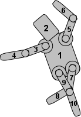

QGraphicsItem Class
The QGraphicsItem class is the base class for all graphical items in a QGraphicsScene. More...
| Header: | #include <QGraphicsItem> |
| CMake: | find_package(Qt6 REQUIRED COMPONENTS Widgets) target_link_libraries(mytarget PRIVATE Qt6::Widgets) |
| qmake: | QT += widgets |
| Inherited By: | QAbstractGraphicsShapeItem, QGraphicsItemGroup, QGraphicsLineItem, QGraphicsObject, and QGraphicsPixmapItem |
Public Types
| enum | CacheMode { NoCache, ItemCoordinateCache, DeviceCoordinateCache } |
| enum | GraphicsItemChange { ItemEnabledChange, ItemEnabledHasChanged, ItemPositionChange, ItemPositionHasChanged, ItemTransformChange, …, ItemScenePositionHasChanged } |
| enum | GraphicsItemFlag { ItemIsMovable, ItemIsSelectable, ItemIsFocusable, ItemClipsToShape, ItemClipsChildrenToShape, …, ItemContainsChildrenInShape } |
| flags | GraphicsItemFlags |
| enum | PanelModality { NonModal, PanelModal, SceneModal } |
| enum | anonymous { Type, UserType } |
Public Functions
| QGraphicsItem(QGraphicsItem *parent = nullptr) | |
| virtual | ~QGraphicsItem() |
| bool | acceptDrops() const |
| bool | acceptHoverEvents() const |
| bool | acceptTouchEvents() const |
| Qt::MouseButtons | acceptedMouseButtons() const |
| virtual void | advance(int phase) |
| virtual QRectF | boundingRect() const = 0 |
| QRegion | boundingRegion(const QTransform &itemToDeviceTransform) const |
| qreal | boundingRegionGranularity() const |
| QGraphicsItem::CacheMode | cacheMode() const |
| QList<QGraphicsItem *> | childItems() const |
| QRectF | childrenBoundingRect() const |
| void | clearFocus() |
| QPainterPath | clipPath() const |
| virtual bool | collidesWithItem(const QGraphicsItem *other, Qt::ItemSelectionMode mode = Qt::IntersectsItemShape) const |
| virtual bool | collidesWithPath(const QPainterPath &path, Qt::ItemSelectionMode mode = Qt::IntersectsItemShape) const |
| QList<QGraphicsItem *> | collidingItems(Qt::ItemSelectionMode mode = Qt::IntersectsItemShape) const |
| QGraphicsItem * | commonAncestorItem(const QGraphicsItem *other) const |
| virtual bool | contains(const QPointF &point) const |
| QCursor | cursor() const |
| QVariant | data(int key) const |
| QTransform | deviceTransform(const QTransform &viewportTransform) const |
| qreal | effectiveOpacity() const |
| void | ensureVisible(const QRectF &rect = QRectF(), int xmargin = 50, int ymargin = 50) |
| void | ensureVisible(qreal x, qreal y, qreal w, qreal h, int xmargin = 50, int ymargin = 50) |
| bool | filtersChildEvents() const |
| QGraphicsItem::GraphicsItemFlags | flags() const |
| QGraphicsItem * | focusItem() const |
| QGraphicsItem * | focusProxy() const |
| void | grabKeyboard() |
| void | grabMouse() |
| QGraphicsEffect * | graphicsEffect() const |
| QGraphicsItemGroup * | group() const |
| bool | hasCursor() const |
| bool | hasFocus() const |
| void | hide() |
| Qt::InputMethodHints | inputMethodHints() const |
| void | installSceneEventFilter(QGraphicsItem *filterItem) |
| bool | isActive() const |
| bool | isAncestorOf(const QGraphicsItem *child) const |
| bool | isBlockedByModalPanel(QGraphicsItem **blockingPanel = nullptr) const |
| bool | isClipped() const |
| bool | isEnabled() const |
| bool | isObscured(const QRectF &rect = QRectF()) const |
| bool | isObscured(qreal x, qreal y, qreal w, qreal h) const |
| virtual bool | isObscuredBy(const QGraphicsItem *item) const |
| bool | isPanel() const |
| bool | isSelected() const |
| bool | isUnderMouse() const |
| bool | isVisible() const |
| bool | isVisibleTo(const QGraphicsItem *parent) const |
| bool | isWidget() const |
| bool | isWindow() const |
| QTransform | itemTransform(const QGraphicsItem *other, bool *ok = nullptr) const |
| QPointF | mapFromItem(const QGraphicsItem *item, const QPointF &point) const |
| QPolygonF | mapFromItem(const QGraphicsItem *item, const QRectF &rect) const |
| QPolygonF | mapFromItem(const QGraphicsItem *item, const QPolygonF &polygon) const |
| QPainterPath | mapFromItem(const QGraphicsItem *item, const QPainterPath &path) const |
| QPointF | mapFromItem(const QGraphicsItem *item, qreal x, qreal y) const |
| QPolygonF | mapFromItem(const QGraphicsItem *item, qreal x, qreal y, qreal w, qreal h) const |
| QPointF | mapFromParent(const QPointF &point) const |
| QPolygonF | mapFromParent(const QRectF &rect) const |
| QPolygonF | mapFromParent(const QPolygonF &polygon) const |
| QPainterPath | mapFromParent(const QPainterPath &path) const |
| QPointF | mapFromParent(qreal x, qreal y) const |
| QPolygonF | mapFromParent(qreal x, qreal y, qreal w, qreal h) const |
| QPointF | mapFromScene(const QPointF &point) const |
| QPolygonF | mapFromScene(const QRectF &rect) const |
| QPolygonF | mapFromScene(const QPolygonF &polygon) const |
| QPainterPath | mapFromScene(const QPainterPath &path) const |
| QPointF | mapFromScene(qreal x, qreal y) const |
| QPolygonF | mapFromScene(qreal x, qreal y, qreal w, qreal h) const |
| QRectF | mapRectFromItem(const QGraphicsItem *item, const QRectF &rect) const |
| QRectF | mapRectFromItem(const QGraphicsItem *item, qreal x, qreal y, qreal w, qreal h) const |
| QRectF | mapRectFromParent(const QRectF &rect) const |
| QRectF | mapRectFromParent(qreal x, qreal y, qreal w, qreal h) const |
| QRectF | mapRectFromScene(const QRectF &rect) const |
| QRectF | mapRectFromScene(qreal x, qreal y, qreal w, qreal h) const |
| QRectF | mapRectToItem(const QGraphicsItem *item, const QRectF &rect) const |
| QRectF | mapRectToItem(const QGraphicsItem *item, qreal x, qreal y, qreal w, qreal h) const |
| QRectF | mapRectToParent(const QRectF &rect) const |
| QRectF | mapRectToParent(qreal x, qreal y, qreal w, qreal h) const |
| QRectF | mapRectToScene(const QRectF &rect) const |
| QRectF | mapRectToScene(qreal x, qreal y, qreal w, qreal h) const |
| QPointF | mapToItem(const QGraphicsItem *item, const QPointF &point) const |
| QPolygonF | mapToItem(const QGraphicsItem *item, const QRectF &rect) const |
| QPolygonF | mapToItem(const QGraphicsItem *item, const QPolygonF &polygon) const |
| QPainterPath | mapToItem(const QGraphicsItem *item, const QPainterPath &path) const |
| QPointF | mapToItem(const QGraphicsItem *item, qreal x, qreal y) const |
| QPolygonF | mapToItem(const QGraphicsItem *item, qreal x, qreal y, qreal w, qreal h) const |
| QPointF | mapToParent(const QPointF &point) const |
| QPolygonF | mapToParent(const QRectF &rect) const |
| QPolygonF | mapToParent(const QPolygonF &polygon) const |
| QPainterPath | mapToParent(const QPainterPath &path) const |
| QPointF | mapToParent(qreal x, qreal y) const |
| QPolygonF | mapToParent(qreal x, qreal y, qreal w, qreal h) const |
| QPointF | mapToScene(const QPointF &point) const |
| QPolygonF | mapToScene(const QRectF &rect) const |
| QPolygonF | mapToScene(const QPolygonF &polygon) const |
| QPainterPath | mapToScene(const QPainterPath &path) const |
| QPointF | mapToScene(qreal x, qreal y) const |
| QPolygonF | mapToScene(qreal x, qreal y, qreal w, qreal h) const |
| void | moveBy(qreal dx, qreal dy) |
| qreal | opacity() const |
| virtual QPainterPath | opaqueArea() const |
| virtual void | paint(QPainter *painter, const QStyleOptionGraphicsItem *option, QWidget *widget = nullptr) = 0 |
| QGraphicsItem * | panel() const |
| QGraphicsItem::PanelModality | panelModality() const |
| QGraphicsItem * | parentItem() const |
| QGraphicsObject * | parentObject() const |
| QGraphicsWidget * | parentWidget() const |
| QPointF | pos() const |
| void | removeSceneEventFilter(QGraphicsItem *filterItem) |
| void | resetTransform() |
| qreal | rotation() const |
| qreal | scale() const |
| QGraphicsScene * | scene() const |
| QRectF | sceneBoundingRect() const |
| QPointF | scenePos() const |
| QTransform | sceneTransform() const |
| void | scroll(qreal dx, qreal dy, const QRectF &rect = QRectF()) |
| void | setAcceptDrops(bool on) |
| void | setAcceptHoverEvents(bool enabled) |
| void | setAcceptTouchEvents(bool enabled) |
| void | setAcceptedMouseButtons(Qt::MouseButtons buttons) |
| void | setActive(bool active) |
| void | setBoundingRegionGranularity(qreal granularity) |
| void | setCacheMode(QGraphicsItem::CacheMode mode, const QSize &logicalCacheSize = QSize()) |
| void | setCursor(const QCursor &cursor) |
| void | setData(int key, const QVariant &value) |
| void | setEnabled(bool enabled) |
| void | setFiltersChildEvents(bool enabled) |
| void | setFlag(QGraphicsItem::GraphicsItemFlag flag, bool enabled = true) |
| void | setFlags(QGraphicsItem::GraphicsItemFlags flags) |
| void | setFocus(Qt::FocusReason focusReason = Qt::OtherFocusReason) |
| void | setFocusProxy(QGraphicsItem *item) |
| void | setGraphicsEffect(QGraphicsEffect *effect) |
| void | setGroup(QGraphicsItemGroup *group) |
| void | setInputMethodHints(Qt::InputMethodHints hints) |
| void | setOpacity(qreal opacity) |
| void | setPanelModality(QGraphicsItem::PanelModality panelModality) |
| void | setParentItem(QGraphicsItem *newParent) |
| void | setPos(const QPointF &pos) |
| void | setPos(qreal x, qreal y) |
| void | setRotation(qreal angle) |
| void | setScale(qreal factor) |
| void | setSelected(bool selected) |
| void | setToolTip(const QString &toolTip) |
| void | setTransform(const QTransform &matrix, bool combine = false) |
| void | setTransformOriginPoint(const QPointF &origin) |
| void | setTransformOriginPoint(qreal x, qreal y) |
| void | setTransformations(const QList<QGraphicsTransform *> &transformations) |
| void | setVisible(bool visible) |
| void | setX(qreal x) |
| void | setY(qreal y) |
| void | setZValue(qreal z) |
| virtual QPainterPath | shape() const |
| void | show() |
| void | stackBefore(const QGraphicsItem *sibling) |
| QGraphicsObject * | toGraphicsObject() |
| const QGraphicsObject * | toGraphicsObject() const |
| QString | toolTip() const |
| QGraphicsItem * | topLevelItem() const |
| QGraphicsWidget * | topLevelWidget() const |
| QTransform | transform() const |
| QPointF | transformOriginPoint() const |
| QList<QGraphicsTransform *> | transformations() const |
| virtual int | type() const |
| void | ungrabKeyboard() |
| void | ungrabMouse() |
| void | unsetCursor() |
| void | update(const QRectF &rect = QRectF()) |
| void | update(qreal x, qreal y, qreal width, qreal height) |
| QGraphicsWidget * | window() const |
| qreal | x() const |
| qreal | y() const |
| qreal | zValue() const |
Protected Functions
| virtual void | contextMenuEvent(QGraphicsSceneContextMenuEvent *event) |
| virtual void | dragEnterEvent(QGraphicsSceneDragDropEvent *event) |
| virtual void | dragLeaveEvent(QGraphicsSceneDragDropEvent *event) |
| virtual void | dragMoveEvent(QGraphicsSceneDragDropEvent *event) |
| virtual void | dropEvent(QGraphicsSceneDragDropEvent *event) |
| virtual void | focusInEvent(QFocusEvent *event) |
| virtual void | focusOutEvent(QFocusEvent *event) |
| virtual void | hoverEnterEvent(QGraphicsSceneHoverEvent *event) |
| virtual void | hoverLeaveEvent(QGraphicsSceneHoverEvent *event) |
| virtual void | hoverMoveEvent(QGraphicsSceneHoverEvent *event) |
| virtual void | inputMethodEvent(QInputMethodEvent *event) |
| virtual QVariant | inputMethodQuery(Qt::InputMethodQuery query) const |
| virtual QVariant | itemChange(QGraphicsItem::GraphicsItemChange change, const QVariant &value) |
| virtual void | keyPressEvent(QKeyEvent *event) |
| virtual void | keyReleaseEvent(QKeyEvent *event) |
| virtual void | mouseDoubleClickEvent(QGraphicsSceneMouseEvent *event) |
| virtual void | mouseMoveEvent(QGraphicsSceneMouseEvent *event) |
| virtual void | mousePressEvent(QGraphicsSceneMouseEvent *event) |
| virtual void | mouseReleaseEvent(QGraphicsSceneMouseEvent *event) |
| void | prepareGeometryChange() |
| virtual bool | sceneEvent(QEvent *event) |
| virtual bool | sceneEventFilter(QGraphicsItem *watched, QEvent *event) |
| void | updateMicroFocus() |
| virtual void | wheelEvent(QGraphicsSceneWheelEvent *event) |
Related Non-Members
| T | qgraphicsitem_cast(QGraphicsItem *item) |
Detailed Description
It provides a light-weight foundation for writing your own custom items. This includes defining the item's geometry, collision detection, its painting implementation and item interaction through its event handlers. QGraphicsItem is part of the Graphics View Framework

For convenience, Qt provides a set of standard graphics items for the most common shapes. These are:
- QGraphicsEllipseItem provides an ellipse item
- QGraphicsLineItem provides a line item
- QGraphicsPathItem provides an arbitrary path item
- QGraphicsPixmapItem provides a pixmap item
- QGraphicsPolygonItem provides a polygon item
- QGraphicsRectItem provides a rectangular item
- QGraphicsSimpleTextItem provides a simple text label item
- QGraphicsTextItem provides an advanced text browser item
All of an item's geometric information is based on its local coordinate system. The item's position, pos(), is the only function that does not operate in local coordinates, as it returns a position in parent coordinates. The Graphics View Coordinate System describes the coordinate system in detail.
You can set whether an item should be visible (i.e., drawn, and accepting events), by calling setVisible(). Hiding an item will also hide its children. Similarly, you can enable or disable an item by calling setEnabled(). If you disable an item, all its children will also be disabled. By default, items are both visible and enabled. To toggle whether an item is selected or not, first enable selection by setting the ItemIsSelectable flag, and then call setSelected(). Normally, selection is toggled by the scene, as a result of user interaction.
To write your own graphics item, you first create a subclass of QGraphicsItem, and then start by implementing its two pure virtual public functions: boundingRect(), which returns an estimate of the area painted by the item, and paint(), which implements the actual painting. For example:
class SimpleItem : public QGraphicsItem { public: QRectF boundingRect() const override { qreal penWidth = 1; return QRectF(-10 - penWidth / 2, -10 - penWidth / 2, 20 + penWidth, 20 + penWidth); } void paint(QPainter *painter, const QStyleOptionGraphicsItem *option, QWidget *widget) override { painter->drawRoundedRect(-10, -10, 20, 20, 5, 5); } };
The boundingRect() function has many different purposes. QGraphicsScene bases its item index on boundingRect(), and QGraphicsView uses it both for culling invisible items, and for determining the area that needs to be recomposed when drawing overlapping items. In addition, QGraphicsItem's collision detection mechanisms use boundingRect() to provide an efficient cut-off. The fine grained collision algorithm in collidesWithItem() is based on calling shape(), which returns an accurate outline of the item's shape as a QPainterPath.
QGraphicsScene expects all items boundingRect() and shape() to remain unchanged unless it is notified. If you want to change an item's geometry in any way, you must first call prepareGeometryChange() to allow QGraphicsScene to update its bookkeeping.
Collision detection can be done in two ways:
- Reimplement shape() to return an accurate shape for your item, and rely on the default implementation of collidesWithItem() to do shape-shape intersection. This can be rather expensive if the shapes are complex.
- Reimplement collidesWithItem() to provide your own custom item and shape collision algorithm.
The contains() function can be called to determine whether the item contains a point or not. This function can also be reimplemented by the item. The default behavior of contains() is based on calling shape().
Items can contain other items, and also be contained by other items. All items can have a parent item and a list of children. Unless the item has no parent, its position is in parent coordinates (i.e., the parent's local coordinates). Parent items propagate both their position and their transformation to all children.

Transformations
QGraphicsItem supports projective transformations in addition to its base position, pos(). There are several ways to change an item's transformation. For simple transformations, you can call either of the convenience functions setRotation() or setScale(), or you can pass any transformation matrix to setTransform(). For advanced transformation control you also have the option of setting several combined transformations by calling setTransformations().
Item transformations accumulate from parent to child, so if both a parent and child item are rotated 90 degrees, the child's total transformation will be 180 degrees. Similarly, if the item's parent is scaled to 2x its original size, its children will also be twice as large. An item's transformation does not affect its own local geometry; all geometry functions (e.g., contains(), update(), and all the mapping functions) still operate in local coordinates. For convenience, QGraphicsItem provides the functions sceneTransform(), which returns the item's total transformation matrix (including its position and all parents' positions and transformations), and scenePos(), which returns its position in scene coordinates. To reset an item's matrix, call resetTransform().
Certain transformation operations produce a different outcome depending on the order in which they are applied. For example, if you scale an transform, and then rotate it, you may get a different result than if the transform was rotated first. However, the order you set the transformation properties on QGraphicsItem does not affect the resulting transformation; QGraphicsItem always applies the properties in a fixed, defined order:
- The item's base transform is applied (transform())
- The item's transformations list is applied in order (transformations())
- The item is rotated relative to its transform origin point (rotation(), transformOriginPoint())
- The item is scaled relative to its transform origin point (scale(), transformOriginPoint())
Painting
The paint() function is called by QGraphicsView to paint the item's contents. The item has no background or default fill of its own; whatever is behind the item will shine through all areas that are not explicitly painted in this function. You can call update() to schedule a repaint, optionally passing the rectangle that needs a repaint. Depending on whether or not the item is visible in a view, the item may or may not be repainted; there is no equivalent to QWidget::repaint() in QGraphicsItem.
Items are painted by the view, starting with the parent items and then drawing children, in ascending stacking order. You can set an item's stacking order by calling setZValue(), and test it by calling zValue(), where items with low z-values are painted before items with high z-values. Stacking order applies to sibling items; parents are always drawn before their children.
Sorting
All items are drawn in a defined, stable order, and this same order decides which items will receive mouse input first when you click on the scene. Normally you don't have to worry about sorting, as the items follow a "natural order", following the logical structure of the scene.
An item's children are stacked on top of the parent, and sibling items are stacked by insertion order (i.e., in the same order that they were either added to the scene, or added to the same parent). If you add item A, and then B, then B will be on top of A. If you then add C, the items' stacking order will be A, then B, then C.

This example shows the stacking order of all limbs of the robot from the Drag and Drop Robot example. The torso is the root item (all other items are children or descendants of the torso), so it is drawn first. Next, the head is drawn, as it is the first item in the torso's list of children. Then the upper left arm is drawn. As the lower arm is a child of the upper arm, the lower arm is then drawn, followed by the upper arm's next sibling, which is the upper right arm, and so on.
For advanced users, there are ways to alter how your items are sorted:
- You can call setZValue() on an item to explicitly stack it on top of, or under, other sibling items. The default Z value for an item is 0. Items with the same Z value are stacked by insertion order.
- You can call stackBefore() to reorder the list of children. This will directly modify the insertion order.
- You can set the ItemStacksBehindParent flag to stack a child item behind its parent.
The stacking order of two sibling items also counts for each item's children and descendant items. So if one item is on top of another, then all its children will also be on top of all the other item's children as well.
Events
QGraphicsItem receives events from QGraphicsScene through the virtual function sceneEvent(). This function distributes the most common events to a set of convenience event handlers:
- contextMenuEvent() handles context menu events
- focusInEvent() and focusOutEvent() handle focus in and out events
- hoverEnterEvent(), hoverMoveEvent(), and hoverLeaveEvent() handles hover enter, move and leave events
- inputMethodEvent() handles input events, for accessibility support
- keyPressEvent() and keyReleaseEvent() handle key press and release events
- mousePressEvent(), mouseMoveEvent(), mouseReleaseEvent(), and mouseDoubleClickEvent() handles mouse press, move, release, click and double-click events
You can filter events for any other item by installing event filters. This functionality is separate from Qt's regular event filters (see QObject::installEventFilter()), which only work on subclasses of QObject. After installing your item as an event filter for another item by calling installSceneEventFilter(), the filtered events will be received by the virtual function sceneEventFilter(). You can remove item event filters by calling removeSceneEventFilter().
Custom Data
Sometimes it's useful to register custom data with an item, be it a custom item, or a standard item. You can call setData() on any item to store data in it using a key-value pair (the key being an integer, and the value is a QVariant). To get custom data from an item, call data(). This functionality is completely untouched by Qt itself; it is provided for the user's convenience.
See also QGraphicsScene, QGraphicsView, and Graphics View Framework.
Member Type Documentation
enum QGraphicsItem::CacheMode
This enum describes QGraphicsItem's cache modes. Caching is used to speed up rendering by allocating and rendering to an off-screen pixel buffer, which can be reused when the item requires redrawing. For some paint devices, the cache is stored directly in graphics memory, which makes rendering very quick.
| Constant | Value | Description |
|---|---|---|
QGraphicsItem::NoCache | 0 | The default; all item caching is disabled. QGraphicsItem::paint() is called every time the item needs redrawing. |
QGraphicsItem::ItemCoordinateCache | 1 | Caching is enabled for the item's logical (local) coordinate system. QGraphicsItem creates an off-screen pixel buffer with a configurable size / resolution that you can pass to QGraphicsItem::setCacheMode(). Rendering quality will typically degrade, depending on the resolution of the cache and the item transformation. The first time the item is redrawn, it will render itself into the cache, and the cache is then reused for every subsequent expose. The cache is also reused as the item is transformed. To adjust the resolution of the cache, you can call setCacheMode() again. |
QGraphicsItem::DeviceCoordinateCache | 2 | Caching is enabled at the paint device level, in device coordinates. This mode is for items that can move, but are not rotated, scaled or sheared. If the item is transformed directly or indirectly, the cache will be regenerated automatically. Unlike ItemCoordinateCacheMode, DeviceCoordinateCache always renders at maximum quality. |
See also QGraphicsItem::setCacheMode().
enum QGraphicsItem::GraphicsItemChange
This enum describes the state changes that are notified by QGraphicsItem::itemChange(). The notifications are sent as the state changes, and in some cases, adjustments can be made (see the documentation for each change for details).
Note: Be careful with calling functions on the QGraphicsItem itself inside itemChange(), as certain function calls can lead to unwanted recursion. For example, you cannot call setPos() in itemChange() on an ItemPositionChange notification, as the setPos() function will again call itemChange(ItemPositionChange). Instead, you can return the new, adjusted position from itemChange().
| Constant | Value | Description |
|---|---|---|
QGraphicsItem::ItemEnabledChange | 3 | The item's enabled state changes. If the item is presently enabled, it will become disabled, and vice verca. The value argument is the new enabled state (i.e., true or false). Do not call setEnabled() in itemChange() as this notification is delivered. Instead, you can return the new state from itemChange(). |
QGraphicsItem::ItemEnabledHasChanged | 13 | The item's enabled state has changed. The value argument is the new enabled state (i.e., true or false). Do not call setEnabled() in itemChange() as this notification is delivered. The return value is ignored. |
QGraphicsItem::ItemPositionChange | 0 | The item's position changes. This notification is sent if the ItemSendsGeometryChanges flag is enabled, and when the item's local position changes, relative to its parent (i.e., as a result of calling setPos() or moveBy()). The value argument is the new position (i.e., a QPointF). You can call pos() to get the original position. Do not call setPos() or moveBy() in itemChange() as this notification is delivered; instead, you can return the new, adjusted position from itemChange(). After this notification, QGraphicsItem immediately sends the ItemPositionHasChanged notification if the position changed. |
QGraphicsItem::ItemPositionHasChanged | 9 | The item's position has changed. This notification is sent if the ItemSendsGeometryChanges flag is enabled, and after the item's local position, relative to its parent, has changed. The value argument is the new position (the same as pos()), and QGraphicsItem ignores the return value for this notification (i.e., a read-only notification). |
QGraphicsItem::ItemTransformChange | 8 | The item's transformation matrix changes. This notification is sent if the ItemSendsGeometryChanges flag is enabled, and when the item's local transformation matrix changes (i.e., as a result of calling setTransform(). The value argument is the new matrix (i.e., a QTransform); to get the old matrix, call transform(). Do not call setTransform() or set any of the transformation properties in itemChange() as this notification is delivered; instead, you can return the new matrix from itemChange(). This notification is not sent if you change the transformation properties. |
QGraphicsItem::ItemTransformHasChanged | 10 | The item's transformation matrix has changed either because setTransform is called, or one of the transformation properties is changed. This notification is sent if the ItemSendsGeometryChanges flag is enabled, and after the item's local transformation matrix has changed. The value argument is the new matrix (same as transform()), and QGraphicsItem ignores the return value for this notification (i.e., a read-only notification). |
QGraphicsItem::ItemRotationChange | 28 | The item's rotation property changes. This notification is sent if the ItemSendsGeometryChanges flag is enabled, and when the item's rotation property changes (i.e., as a result of calling setRotation()). The value argument is the new rotation (i.e., a double); to get the old rotation, call rotation(). Do not call setRotation() in itemChange() as this notification is delivered; instead, you can return the new rotation from itemChange(). |
QGraphicsItem::ItemRotationHasChanged | 29 | The item's rotation property has changed. This notification is sent if the ItemSendsGeometryChanges flag is enabled, and after the item's rotation property has changed. The value argument is the new rotation (i.e., a double), and QGraphicsItem ignores the return value for this notification (i.e., a read-only notification). Do not call setRotation() in itemChange() as this notification is delivered. |
QGraphicsItem::ItemScaleChange | 30 | The item's scale property changes. This notification is sent if the ItemSendsGeometryChanges flag is enabled, and when the item's scale property changes (i.e., as a result of calling setScale()). The value argument is the new scale (i.e., a double); to get the old scale, call scale(). Do not call setScale() in itemChange() as this notification is delivered; instead, you can return the new scale from itemChange(). |
QGraphicsItem::ItemScaleHasChanged | 31 | The item's scale property has changed. This notification is sent if the ItemSendsGeometryChanges flag is enabled, and after the item's scale property has changed. The value argument is the new scale (i.e., a double), and QGraphicsItem ignores the return value for this notification (i.e., a read-only notification). Do not call setScale() in itemChange() as this notification is delivered. |
QGraphicsItem::ItemTransformOriginPointChange | 32 | The item's transform origin point property changes. This notification is sent if the ItemSendsGeometryChanges flag is enabled, and when the item's transform origin point property changes (i.e., as a result of calling setTransformOriginPoint()). The value argument is the new origin point (i.e., a QPointF); to get the old origin point, call transformOriginPoint(). Do not call setTransformOriginPoint() in itemChange() as this notification is delivered; instead, you can return the new transform origin point from itemChange(). |
QGraphicsItem::ItemTransformOriginPointHasChanged | 33 | The item's transform origin point property has changed. This notification is sent if the ItemSendsGeometryChanges flag is enabled, and after the item's transform origin point property has changed. The value argument is the new origin point (i.e., a QPointF), and QGraphicsItem ignores the return value for this notification (i.e., a read-only notification). Do not call setTransformOriginPoint() in itemChange() as this notification is delivered. |
QGraphicsItem::ItemSelectedChange | 4 | The item's selected state changes. If the item is presently selected, it will become unselected, and vice verca. The value argument is the new selected state (i.e., true or false). Do not call setSelected() in itemChange() as this notification is delivered; instead, you can return the new selected state from itemChange(). |
QGraphicsItem::ItemSelectedHasChanged | 14 | The item's selected state has changed. The value argument is the new selected state (i.e., true or false). Do not call setSelected() in itemChange() as this notification is delivered. The return value is ignored. |
QGraphicsItem::ItemVisibleChange | 2 | The item's visible state changes. If the item is presently visible, it will become invisible, and vice verca. The value argument is the new visible state (i.e., true or false). Do not call setVisible() in itemChange() as this notification is delivered; instead, you can return the new visible state from itemChange(). |
QGraphicsItem::ItemVisibleHasChanged | 12 | The item's visible state has changed. The value argument is the new visible state (i.e., true or false). Do not call setVisible() in itemChange() as this notification is delivered. The return value is ignored. |
QGraphicsItem::ItemParentChange | 5 | The item's parent changes. The value argument is the new parent item (i.e., a QGraphicsItem pointer). Do not call setParentItem() in itemChange() as this notification is delivered; instead, you can return the new parent from itemChange(). |
QGraphicsItem::ItemParentHasChanged | 15 | The item's parent has changed. The value argument is the new parent (i.e., a pointer to a QGraphicsItem). Do not call setParentItem() in itemChange() as this notification is delivered. The return value is ignored. |
QGraphicsItem::ItemChildAddedChange | 6 | A child is added to this item. The value argument is the new child item (i.e., a QGraphicsItem pointer). Do not pass this item to any item's setParentItem() function as this notification is delivered. The return value is unused; you cannot adjust anything in this notification. Note that the new child might not be fully constructed when this notification is sent; calling pure virtual functions on the child can lead to a crash. |
QGraphicsItem::ItemChildRemovedChange | 7 | A child is removed from this item. The value argument is the child item that is about to be removed (i.e., a QGraphicsItem pointer). The return value is unused; you cannot adjust anything in this notification. |
QGraphicsItem::ItemSceneChange | 11 | The item is moved to a new scene. This notification is also sent when the item is added to its initial scene, and when it is removed. The item's scene() is the old scene, or nullptr if the item has not been added to a scene yet. The value argument is the new scene (i.e., a QGraphicsScene pointer), or nullptr if the item is removed from a scene. Do not override this change by passing this item to QGraphicsScene::addItem() as this notification is delivered; instead, you can return the new scene from itemChange(). Use this feature with caution; objecting to a scene change can quickly lead to unwanted recursion. |
QGraphicsItem::ItemSceneHasChanged | 16 | The item's scene has changed. The item's scene() is the new scene. This notification is also sent when the item is added to its initial scene, and when it is removed.The value argument is the new scene (i.e., a pointer to a QGraphicsScene). Do not call setScene() in itemChange() as this notification is delivered. The return value is ignored. |
QGraphicsItem::ItemCursorChange | 17 | The item's cursor changes. The value argument is the new cursor (i.e., a QCursor). Do not call setCursor() in itemChange() as this notification is delivered. Instead, you can return a new cursor from itemChange(). |
QGraphicsItem::ItemCursorHasChanged | 18 | The item's cursor has changed. The value argument is the new cursor (i.e., a QCursor). Do not call setCursor() as this notification is delivered. The return value is ignored. |
QGraphicsItem::ItemToolTipChange | 19 | The item's tooltip changes. The value argument is the new tooltip (i.e., a QToolTip). Do not call setToolTip() in itemChange() as this notification is delivered. Instead, you can return a new tooltip from itemChange(). |
QGraphicsItem::ItemToolTipHasChanged | 20 | The item's tooltip has changed. The value argument is the new tooltip (i.e., a QToolTip). Do not call setToolTip() as this notification is delivered. The return value is ignored. |
QGraphicsItem::ItemFlagsChange | 21 | The item's flags change. The value argument is the new flags (i.e., a quint32). Do not call setFlags() in itemChange() as this notification is delivered. Instead, you can return the new flags from itemChange(). |
QGraphicsItem::ItemFlagsHaveChanged | 22 | The item's flags have changed. The value argument is the new flags (i.e., a quint32). Do not call setFlags() in itemChange() as this notification is delivered. The return value is ignored. |
QGraphicsItem::ItemZValueChange | 23 | The item's Z-value changes. The value argument is the new Z-value (i.e., a double). Do not call setZValue() in itemChange() as this notification is delivered. Instead, you can return a new Z-value from itemChange(). |
QGraphicsItem::ItemZValueHasChanged | 24 | The item's Z-value has changed. The value argument is the new Z-value (i.e., a double). Do not call setZValue() as this notification is delivered. The return value is ignored. |
QGraphicsItem::ItemOpacityChange | 25 | The item's opacity changes. The value argument is the new opacity (i.e., a double). Do not call setOpacity() in itemChange() as this notification is delivered. Instead, you can return a new opacity from itemChange(). |
QGraphicsItem::ItemOpacityHasChanged | 26 | The item's opacity has changed. The value argument is the new opacity (i.e., a double). Do not call setOpacity() as this notification is delivered. The return value is ignored. |
QGraphicsItem::ItemScenePositionHasChanged | 27 | The item's scene position has changed. This notification is sent if the ItemSendsScenePositionChanges flag is enabled, and after the item's scene position has changed (i.e., the position or transformation of the item itself or the position or transformation of any ancestor has changed). The value argument is the new scene position (the same as scenePos()), and QGraphicsItem ignores the return value for this notification (i.e., a read-only notification). |
enum QGraphicsItem::GraphicsItemFlag
flags QGraphicsItem::GraphicsItemFlags
This enum describes different flags that you can set on an item to toggle different features in the item's behavior.
All flags are disabled by default.
| Constant | Value | Description |
|---|---|---|
QGraphicsItem::ItemIsMovable | 0x1 | The item supports interactive movement using the mouse. By clicking on the item and then dragging, the item will move together with the mouse cursor. If the item has children, all children are also moved. If the item is part of a selection, all selected items are also moved. This feature is provided as a convenience through the base implementation of QGraphicsItem's mouse event handlers. |
QGraphicsItem::ItemIsSelectable | 0x2 | The item supports selection. Enabling this feature will enable setSelected() to toggle selection for the item. It will also let the item be selected automatically as a result of calling QGraphicsScene::setSelectionArea(), by clicking on an item, or by using rubber band selection in QGraphicsView. |
QGraphicsItem::ItemIsFocusable | 0x4 | The item supports keyboard input focus (i.e., it is an input item). Enabling this flag will allow the item to accept focus, which again allows the delivery of key events to QGraphicsItem::keyPressEvent() and QGraphicsItem::keyReleaseEvent(). |
QGraphicsItem::ItemClipsToShape | 0x8 | The item clips to its own shape. The item cannot draw or receive mouse, tablet, drag and drop or hover events outside its shape. It is disabled by default. This behavior is enforced by QGraphicsView::drawItems() or QGraphicsScene::drawItems(). This flag was introduced in Qt 4.3. |
QGraphicsItem::ItemClipsChildrenToShape | 0x10 | The item clips the painting of all its descendants to its own shape. Items that are either direct or indirect children of this item cannot draw outside this item's shape. By default, this flag is disabled; children can draw anywhere. This behavior is enforced by QGraphicsView::drawItems() or QGraphicsScene::drawItems(). This flag was introduced in Qt 4.3. |
Note: This flag is similar to ItemContainsChildrenInShape but in addition enforces the containment by clipping the children.
| Constant | Value | Description |
|---|---|---|
QGraphicsItem::ItemIgnoresTransformations | 0x20 | The item ignores inherited transformations (i.e., its position is still anchored to its parent, but the parent or view rotation, zoom or shear transformations are ignored). This flag is useful for keeping text label items horizontal and unscaled, so they will still be readable if the view is transformed. When set, the item's view geometry and scene geometry will be maintained separately. You must call deviceTransform() to map coordinates and detect collisions in the view. By default, this flag is disabled. This flag was introduced in Qt 4.3. |
Note: With this flag set you can still scale the item itself, and that scale transformation will influence the item's children.
| Constant | Value | Description |
|---|---|---|
QGraphicsItem::ItemIgnoresParentOpacity | 0x40 | The item ignores its parent's opacity. The item's effective opacity is the same as its own; it does not combine with the parent's opacity. This flags allows your item to keep its absolute opacity even if the parent is semitransparent. This flag was introduced in Qt 4.5. |
QGraphicsItem::ItemDoesntPropagateOpacityToChildren | 0x80 | The item doesn't propagate its opacity to its children. This flag allows you to create a semitransparent item that does not affect the opacity of its children. This flag was introduced in Qt 4.5. |
QGraphicsItem::ItemStacksBehindParent | 0x100 | The item is stacked behind its parent. By default, child items are stacked on top of the parent item. But setting this flag, the child will be stacked behind it. This flag is useful for drop shadow effects and for decoration objects that follow the parent item's geometry without drawing on top of it. This flag was introduced in Qt 4.5. |
QGraphicsItem::ItemUsesExtendedStyleOption | 0x200 | The item makes use of either exposedRect in QStyleOptionGraphicsItem. By default, the exposedRect is initialized to the item's boundingRect(). You can enable this flag for the style options to be set up with more fine-grained values. Use QStyleOptionGraphicsItem::levelOfDetailFromTransform() if you need a higher value. This flag was introduced in Qt 4.6. |
QGraphicsItem::ItemHasNoContents | 0x400 | The item does not paint anything (i.e., calling paint() on the item has no effect). You should set this flag on items that do not need to be painted to ensure that Graphics View avoids unnecessary painting preparations. This flag was introduced in Qt 4.6. |
QGraphicsItem::ItemSendsGeometryChanges | 0x800 | The item enables itemChange() notifications for ItemPositionChange, ItemPositionHasChanged, ItemTransformChange, ItemTransformHasChanged, ItemRotationChange, ItemRotationHasChanged, ItemScaleChange, ItemScaleHasChanged, ItemTransformOriginPointChange, and ItemTransformOriginPointHasChanged. For performance reasons, these notifications are disabled by default. You must enable this flag to receive notifications for position and transform changes. This flag was introduced in Qt 4.6. |
QGraphicsItem::ItemAcceptsInputMethod | 0x1000 | The item supports input methods typically used for Asian languages. This flag was introduced in Qt 4.6. |
QGraphicsItem::ItemNegativeZStacksBehindParent | 0x2000 | The item automatically stacks behind it's parent if it's z-value is negative. This flag enables setZValue() to toggle ItemStacksBehindParent. This flag was introduced in Qt 4.6. |
QGraphicsItem::ItemIsPanel | 0x4000 | The item is a panel. A panel provides activation and contained focus handling. Only one panel can be active at a time (see QGraphicsItem::isActive()). When no panel is active, QGraphicsScene activates all non-panel items. Window items (i.e., QGraphicsItem::isWindow() returns true) are panels. This flag was introduced in Qt 4.6. |
QGraphicsItem::ItemSendsScenePositionChanges | 0x10000 | The item enables itemChange() notifications for ItemScenePositionHasChanged. For performance reasons, these notifications are disabled by default. You must enable this flag to receive notifications for scene position changes. This flag was introduced in Qt 4.6. |
QGraphicsItem::ItemContainsChildrenInShape | 0x80000 | This flag indicates that all of the item's direct or indirect children only draw within the item's shape. Unlike ItemClipsChildrenToShape, this restriction is not enforced. Set ItemContainsChildrenInShape when you manually assure that drawing is bound to the item's shape and want to avoid the cost associated with enforcing the clip. Setting this flag enables more efficient drawing and collision detection. The flag is disabled by default. |
Note: If both this flag and ItemClipsChildrenToShape are set, the clip will be enforced. This is equivalent to just setting ItemClipsChildrenToShape.
This flag was introduced in Qt 5.4.
The GraphicsItemFlags type is a typedef for QFlags<GraphicsItemFlag>. It stores an OR combination of GraphicsItemFlag values.
enum QGraphicsItem::PanelModality
This enum specifies the behavior of a modal panel. A modal panel is one that blocks input to other panels. Note that items that are children of a modal panel are not blocked.
The values are:
| Constant | Value | Description |
|---|---|---|
QGraphicsItem::NonModal | 0 | The panel is not modal and does not block input to other panels. This is the default value for panels. |
QGraphicsItem::PanelModal | 1 | The panel is modal to a single item hierarchy and blocks input to its parent pane, all grandparent panels, and all siblings of its parent and grandparent panels. |
QGraphicsItem::SceneModal | 2 | The window is modal to the entire scene and blocks input to all panels. |
See also QGraphicsItem::setPanelModality(), QGraphicsItem::panelModality(), and QGraphicsItem::ItemIsPanel.
enum QGraphicsItem::anonymous
The value returned by the virtual type() function in standard graphics item classes in Qt. All such standard graphics item classes in Qt are associated with a unique value for Type, e.g. the value returned by QGraphicsPathItem::type() is 2.
| Constant | Value | Description |
|---|---|---|
QGraphicsItem::Type | 1 | class QGraphicsPathItem : public QAbstractGraphicsShapeItem { public: enum { Type = 2 }; int type() const override { return Type; } ... }; |
QGraphicsItem::UserType | 65536 | The lowest value returned by the virtual type() function for custom subclasses of QGraphicsItem.class CustomItem : public QGraphicsItem { public: enum { Type = UserType + 1 }; int type() const override { // Enable the use of qgraphicsitem_cast with this item. return Type; } ... }; |
Member Function Documentation
[explicit] QGraphicsItem::QGraphicsItem(QGraphicsItem *parent = nullptr)
Constructs a QGraphicsItem with the given parent item. It does not modify the parent object returned by QObject::parent().
If parent is nullptr, you can add the item to a scene by calling QGraphicsScene::addItem(). The item will then become a top-level item.
See also QGraphicsScene::addItem() and setParentItem().
[virtual noexcept] QGraphicsItem::~QGraphicsItem()
Destroys the QGraphicsItem and all its children. If this item is currently associated with a scene, the item will be removed from the scene before it is deleted.
Note: It is more efficient to remove the item from the QGraphicsScene before destroying the item.
bool QGraphicsItem::acceptDrops() const
Returns true if this item can accept drag and drop events; otherwise, returns false. By default, items do not accept drag and drop events; items are transparent to drag and drop.
See also setAcceptDrops().
bool QGraphicsItem::acceptHoverEvents() const
Returns true if an item accepts hover events (QGraphicsSceneHoverEvent); otherwise, returns false. By default, items do not accept hover events.
See also setAcceptHoverEvents() and setAcceptedMouseButtons().
bool QGraphicsItem::acceptTouchEvents() const
Returns true if an item accepts touch events; otherwise, returns false. By default, items do not accept touch events.
See also setAcceptTouchEvents().
Qt::MouseButtons QGraphicsItem::acceptedMouseButtons() const
Returns the mouse buttons that this item accepts mouse events for. By default, all mouse buttons are accepted.
If an item accepts a mouse button, it will become the mouse grabber item when a mouse press event is delivered for that mouse button. However, if the item does not accept the button, QGraphicsScene will forward the mouse events to the first item beneath it that does.
See also setAcceptedMouseButtons() and mousePressEvent().
[virtual] void QGraphicsItem::advance(int phase)
This virtual function is called twice for all items by the QGraphicsScene::advance() slot. In the first phase, all items are called with phase == 0, indicating that items on the scene are about to advance, and then all items are called with phase == 1. Reimplement this function to update your item if you need simple scene-controlled animation.
The default implementation does nothing.
This function is intended for animations. An alternative is to multiple-inherit from QObject and QGraphicsItem and use the Animation Framework.
See also QGraphicsScene::advance() and QTimeLine.
[pure virtual] QRectF QGraphicsItem::boundingRect() const
This pure virtual function defines the outer bounds of the item as a rectangle; all painting must be restricted to inside an item's bounding rect. QGraphicsView uses this to determine whether the item requires redrawing.
Although the item's shape can be arbitrary, the bounding rect is always rectangular, and it is unaffected by the items' transformation.
If you want to change the item's bounding rectangle, you must first call prepareGeometryChange(). This notifies the scene of the imminent change, so that it can update its item geometry index; otherwise, the scene will be unaware of the item's new geometry, and the results are undefined (typically, rendering artifacts are left within the view).
Reimplement this function to let QGraphicsView determine what parts of the widget, if any, need to be redrawn.
Note: For shapes that paint an outline / stroke, it is important to include half the pen width in the bounding rect. It is not necessary to compensate for antialiasing, though.
Example:
QRectF CircleItem::boundingRect() const { qreal penWidth = 1; return QRectF(-radius - penWidth / 2, -radius - penWidth / 2, diameter + penWidth, diameter + penWidth); }
See also boundingRegion(), shape(), contains(), The Graphics View Coordinate System, and prepareGeometryChange().
QRegion QGraphicsItem::boundingRegion(const QTransform &itemToDeviceTransform) const
Returns the bounding region for this item. The coordinate space of the returned region depends on itemToDeviceTransform. If you pass an identity QTransform as a parameter, this function will return a local coordinate region.
The bounding region describes a coarse outline of the item's visual contents. Although it's expensive to calculate, it's also more precise than boundingRect(), and it can help to avoid unnecessary repainting when an item is updated. This is particularly efficient for thin items (e.g., lines or simple polygons). You can tune the granularity for the bounding region by calling setBoundingRegionGranularity(). The default granularity is 0; in which the item's bounding region is the same as its bounding rect.
itemToDeviceTransform is the transformation from item coordinates to device coordinates. If you want this function to return a QRegion in scene coordinates, you can pass sceneTransform() as an argument.
See also boundingRegionGranularity().
qreal QGraphicsItem::boundingRegionGranularity() const
Returns the item's bounding region granularity; a value between and including 0 and 1. The default value is 0 (i.e., the lowest granularity, where the bounding region corresponds to the item's bounding rectangle).
See also setBoundingRegionGranularity().
QGraphicsItem::CacheMode QGraphicsItem::cacheMode() const
Returns the cache mode for this item. The default mode is NoCache (i.e., cache is disabled and all painting is immediate).
See also setCacheMode().
QList<QGraphicsItem *> QGraphicsItem::childItems() const
Returns a list of this item's children.
The items are sorted by stacking order. This takes into account both the items' insertion order and their Z-values.
See also setParentItem(), zValue(), and Sorting.
QRectF QGraphicsItem::childrenBoundingRect() const
Returns the bounding rect of this item's descendants (i.e., its children, their children, etc.) in local coordinates. The rectangle will contain all descendants after they have been mapped to local coordinates. If the item has no children, this function returns an empty QRectF.
This does not include this item's own bounding rect; it only returns its descendants' accumulated bounding rect. If you need to include this item's bounding rect, you can add boundingRect() to childrenBoundingRect() using QRectF::operator|().
This function is linear in complexity; it determines the size of the returned bounding rect by iterating through all descendants.
See also boundingRect() and sceneBoundingRect().
void QGraphicsItem::clearFocus()
Takes keyboard input focus from the item.
If it has focus, a focus out event is sent to this item to tell it that it is about to lose the focus.
Only items that set the ItemIsFocusable flag, or widgets that set an appropriate focus policy, can accept keyboard focus.
See also setFocus(), hasFocus(), and QGraphicsWidget::focusPolicy.
QPainterPath QGraphicsItem::clipPath() const
Returns this item's clip path, or an empty QPainterPath if this item is not clipped. The clip path constrains the item's appearance and interaction (i.e., restricts the area the item can draw within and receive events for).
You can enable clipping by setting the ItemClipsToShape or ItemClipsChildrenToShape flags. The item's clip path is calculated by intersecting all clipping ancestors' shapes. If the item sets ItemClipsToShape, the final clip is intersected with the item's own shape.
Note: Clipping introduces a performance penalty for all items involved; you should generally avoid using clipping if you can (e.g., if your items always draw inside boundingRect() or shape() boundaries, clipping is not necessary).
See also isClipped(), shape(), and setFlags().
[virtual] bool QGraphicsItem::collidesWithItem(const QGraphicsItem *other, Qt::ItemSelectionMode mode = Qt::IntersectsItemShape) const
Returns true if this item collides with other; otherwise returns false.
The mode is applied to other, and the resulting shape or bounding rectangle is then compared to this item's shape. The default value for mode is Qt::IntersectsItemShape; other collides with this item if it either intersects, contains, or is contained by this item's shape (see Qt::ItemSelectionMode for details).
The default implementation is based on shape intersection, and it calls shape() on both items. Because the complexity of arbitrary shape-shape intersection grows with an order of magnitude when the shapes are complex, this operation can be noticeably time-consuming. You have the option of reimplementing this function in a subclass of QGraphicsItem to provide a custom algorithm. This allows you to make use of natural constraints in the shapes of your own items, in order to improve the performance of the collision detection. For instance, two untransformed perfectly circular items' collision can be determined very efficiently by comparing their positions and radii.
Keep in mind that when reimplementing this function and calling shape() or boundingRect() on other, the returned coordinates must be mapped to this item's coordinate system before any intersection can take place.
See also contains() and shape().
[virtual] bool QGraphicsItem::collidesWithPath(const QPainterPath &path, Qt::ItemSelectionMode mode = Qt::IntersectsItemShape) const
Returns true if this item collides with path.
The collision is determined by mode. The default value for mode is Qt::IntersectsItemShape; path collides with this item if it either intersects, contains, or is contained by this item's shape.
Note that this function checks whether the item's shape or bounding rectangle (depending on mode) is contained within path, and not whether path is contained within the items shape or bounding rectangle.
See also collidesWithItem(), contains(), and shape().
QList<QGraphicsItem *> QGraphicsItem::collidingItems(Qt::ItemSelectionMode mode = Qt::IntersectsItemShape) const
Returns a list of all items that collide with this item.
The way collisions are detected is determined by applying mode to items that are compared to this item, i.e., each item's shape or bounding rectangle is checked against this item's shape. The default value for mode is Qt::IntersectsItemShape.
See also collidesWithItem().
QGraphicsItem *QGraphicsItem::commonAncestorItem(const QGraphicsItem *other) const
Returns the closest common ancestor item of this item and other, or nullptr if either other is nullptr, or there is no common ancestor.
See also isAncestorOf().
[virtual] bool QGraphicsItem::contains(const QPointF &point) const
Returns true if this item contains point, which is in local coordinates; otherwise, false is returned. It is most often called from QGraphicsView to determine what item is under the cursor, and for that reason, the implementation of this function should be as light-weight as possible.
By default, this function calls shape(), but you can reimplement it in a subclass to provide a (perhaps more efficient) implementation.
See also shape(), boundingRect(), and collidesWithPath().
[virtual protected] void QGraphicsItem::contextMenuEvent(QGraphicsSceneContextMenuEvent *event)
This event handler can be reimplemented in a subclass to process context menu events. The event parameter contains details about the event to be handled.
If you ignore the event (i.e., by calling QEvent::ignore()), event will propagate to any item beneath this item. If no items accept the event, it will be ignored by the scene and propagate to the view.
It's common to open a QMenu in response to receiving a context menu event. Example:
void CustomItem::contextMenuEvent(QGraphicsSceneContextMenuEvent *event) { QMenu menu; QAction *removeAction = menu.addAction("Remove"); QAction *markAction = menu.addAction("Mark"); QAction *selectedAction = menu.exec(event->screenPos()); // ... }
The default implementation ignores the event.
See also sceneEvent().
QCursor QGraphicsItem::cursor() const
Returns the current cursor shape for the item. The mouse cursor will assume this shape when it's over this item. See the list of predefined cursor objects for a range of useful shapes.
An editor item might want to use an I-beam cursor:
item->setCursor(Qt::IBeamCursor);
If no cursor has been set, the cursor of the item beneath is used.
See also setCursor(), hasCursor(), unsetCursor(), QWidget::cursor, and QGuiApplication::overrideCursor().
QVariant QGraphicsItem::data(int key) const
Returns this item's custom data for the key key as a QVariant.
Custom item data is useful for storing arbitrary properties in any item. Example:
static const int ObjectName = 0; QGraphicsItem *item = scene.itemAt(100, 50); if (item->data(ObjectName).toString().isEmpty()) { if (qgraphicsitem_cast<ButtonItem *>(item)) item->setData(ObjectName, "Button"); }
Qt does not use this feature for storing data; it is provided solely for the convenience of the user.
See also setData().
QTransform QGraphicsItem::deviceTransform(const QTransform &viewportTransform) const
Returns this item's device transformation matrix, using viewportTransform to map from scene to device coordinates. This matrix can be used to map coordinates and geometrical shapes from this item's local coordinate system to the viewport's (or any device's) coordinate system. To map coordinates from the viewport, you must first invert the returned matrix.
Example:
QGraphicsRectItem rect; rect.setPos(100, 100); rect.deviceTransform(view->viewportTransform()).map(QPointF(0, 0)); // returns the item's (0, 0) point in view's viewport coordinates rect.deviceTransform(view->viewportTransform()).inverted().map(QPointF(100, 100)); // returns view's viewport's (100, 100) coordinate in item coordinates
This function is the same as combining this item's scene transform with the view's viewport transform, but it also understands the ItemIgnoresTransformations flag. The device transform can be used to do accurate coordinate mapping (and collision detection) for untransformable items.
See also transform(), setTransform(), scenePos(), The Graphics View Coordinate System, and itemTransform().
[virtual protected] void QGraphicsItem::dragEnterEvent(QGraphicsSceneDragDropEvent *event)
This event handler, for event event, can be reimplemented to receive drag enter events for this item. Drag enter events are generated as the cursor enters the item's area.
By accepting the event (i.e., by calling QEvent::accept()), the item will accept drop events, in addition to receiving drag move and drag leave. Otherwise, the event will be ignored and propagate to the item beneath. If the event is accepted, the item will receive a drag move event before control goes back to the event loop.
A common implementation of dragEnterEvent accepts or ignores event depending on the associated mime data in event. Example:
CustomItem::CustomItem() { setAcceptDrops(true); ... } void CustomItem::dragEnterEvent(QGraphicsSceneDragDropEvent *event) { event->setAccepted(event->mimeData()->hasFormat("text/plain")); }
Items do not receive drag and drop events by default; to enable this feature, call setAcceptDrops(true).
The default implementation does nothing.
See also dropEvent(), dragMoveEvent(), and dragLeaveEvent().
[virtual protected] void QGraphicsItem::dragLeaveEvent(QGraphicsSceneDragDropEvent *event)
This event handler, for event event, can be reimplemented to receive drag leave events for this item. Drag leave events are generated as the cursor leaves the item's area. Most often you will not need to reimplement this function, but it can be useful for resetting state in your item (e.g., highlighting).
Calling QEvent::ignore() or QEvent::accept() on event has no effect.
Items do not receive drag and drop events by default; to enable this feature, call setAcceptDrops(true).
The default implementation does nothing.
See also dragEnterEvent(), dropEvent(), and dragMoveEvent().
[virtual protected] void QGraphicsItem::dragMoveEvent(QGraphicsSceneDragDropEvent *event)
This event handler, for event event, can be reimplemented to receive drag move events for this item. Drag move events are generated as the cursor moves around inside the item's area. Most often you will not need to reimplement this function; it is used to indicate that only parts of the item can accept drops.
Calling QEvent::ignore() or QEvent::accept() on event toggles whether or not the item will accept drops at the position from the event. By default, event is accepted, indicating that the item allows drops at the specified position.
Items do not receive drag and drop events by default; to enable this feature, call setAcceptDrops(true).
The default implementation does nothing.
See also dropEvent(), dragEnterEvent(), and dragLeaveEvent().
[virtual protected] void QGraphicsItem::dropEvent(QGraphicsSceneDragDropEvent *event)
This event handler, for event event, can be reimplemented to receive drop events for this item. Items can only receive drop events if the last drag move event was accepted.
Calling QEvent::ignore() or QEvent::accept() on event has no effect.
Items do not receive drag and drop events by default; to enable this feature, call setAcceptDrops(true).
The default implementation does nothing.
See also dragEnterEvent(), dragMoveEvent(), and dragLeaveEvent().
qreal QGraphicsItem::effectiveOpacity() const
Returns this item's effective opacity, which is between 0.0 (transparent) and 1.0 (opaque). This value is a combination of this item's local opacity, and its parent and ancestors' opacities. The effective opacity decides how the item is rendered.
See also opacity(), setOpacity(), paint(), ItemIgnoresParentOpacity, and ItemDoesntPropagateOpacityToChildren.
void QGraphicsItem::ensureVisible(const QRectF &rect = QRectF(), int xmargin = 50, int ymargin = 50)
If this item is part of a scene that is viewed by a QGraphicsView, this convenience function will attempt to scroll the view to ensure that rect is visible inside the view's viewport. If rect is a null rect (the default), QGraphicsItem will default to the item's bounding rect. xmargin and ymargin are the number of pixels the view should use for margins.
If the specified rect cannot be reached, the contents are scrolled to the nearest valid position.
If this item is not viewed by a QGraphicsView, this function does nothing.
See also QGraphicsView::ensureVisible().
void QGraphicsItem::ensureVisible(qreal x, qreal y, qreal w, qreal h, int xmargin = 50, int ymargin = 50)
This convenience function is equivalent to calling ensureVisible(QRectF(x, y, w, h), xmargin, ymargin).
bool QGraphicsItem::filtersChildEvents() const
Returns true if this item filters child events (i.e., all events intended for any of its children are instead sent to this item); otherwise, false is returned.
The default value is false; child events are not filtered.
See also setFiltersChildEvents().
QGraphicsItem::GraphicsItemFlags QGraphicsItem::flags() const
Returns this item's flags. The flags describe what configurable features of the item are enabled and not. For example, if the flags include ItemIsFocusable, the item can accept input focus.
By default, no flags are enabled.
See also setFlags() and setFlag().
[virtual protected] void QGraphicsItem::focusInEvent(QFocusEvent *event)
This event handler, for event event, can be reimplemented to receive focus in events for this item. The default implementation calls ensureVisible().
See also focusOutEvent(), sceneEvent(), and setFocus().
QGraphicsItem *QGraphicsItem::focusItem() const
If this item, a child or descendant of this item currently has input focus, this function will return a pointer to that item. If no descendant has input focus, nullptr is returned.
See also hasFocus(), setFocus(), and QWidget::focusWidget().
[virtual protected] void QGraphicsItem::focusOutEvent(QFocusEvent *event)
This event handler, for event event, can be reimplemented to receive focus out events for this item. The default implementation does nothing.
See also focusInEvent(), sceneEvent(), and setFocus().
QGraphicsItem *QGraphicsItem::focusProxy() const
Returns this item's focus proxy, or nullptr if this item has no focus proxy.
See also setFocusProxy(), setFocus(), and hasFocus().
void QGraphicsItem::grabKeyboard()
Grabs the keyboard input.
The item will receive all keyboard input to the scene until one of the following events occur:
- The item becomes invisible
- The item is removed from the scene
- The item is deleted
- The item calls ungrabKeyboard()
- Another item calls grabKeyboard(); the item will regain the keyboard grab when the other item calls ungrabKeyboard().
When an item gains the keyboard grab, it receives a QEvent::GrabKeyboard event. When it loses the keyboard grab, it receives a QEvent::UngrabKeyboard event. These events can be used to detect when your item gains or loses the keyboard grab through other means than gaining input focus.
It is almost never necessary to explicitly grab the keyboard in Qt, as Qt grabs and releases it sensibly. In particular, Qt grabs the keyboard when your item gains input focus, and releases it when your item loses input focus, or when the item is hidden.
Note that only visible items can grab keyboard input. Calling grabKeyboard() on an invisible item has no effect.
Keyboard events are not affected.
See also ungrabKeyboard(), grabMouse(), and setFocus().
void QGraphicsItem::grabMouse()
Grabs the mouse input.
This item will receive all mouse events for the scene until any of the following events occurs:
- The item becomes invisible
- The item is removed from the scene
- The item is deleted
- The item call ungrabMouse()
- Another item calls grabMouse(); the item will regain the mouse grab when the other item calls ungrabMouse().
When an item gains the mouse grab, it receives a QEvent::GrabMouse event. When it loses the mouse grab, it receives a QEvent::UngrabMouse event. These events can be used to detect when your item gains or loses the mouse grab through other means than receiving mouse button events.
It is almost never necessary to explicitly grab the mouse in Qt, as Qt grabs and releases it sensibly. In particular, Qt grabs the mouse when you press a mouse button, and keeps the mouse grabbed until you release the last mouse button. Also, Qt::Popup widgets implicitly call grabMouse() when shown, and ungrabMouse() when hidden.
Note that only visible items can grab mouse input. Calling grabMouse() on an invisible item has no effect.
Keyboard events are not affected.
See also QGraphicsScene::mouseGrabberItem(), ungrabMouse(), and grabKeyboard().
QGraphicsEffect *QGraphicsItem::graphicsEffect() const
Returns a pointer to this item's effect if it has one; otherwise nullptr.
See also setGraphicsEffect().
QGraphicsItemGroup *QGraphicsItem::group() const
Returns a pointer to this item's item group, or nullptr if this item is not member of a group.
See also setGroup(), QGraphicsItemGroup, and QGraphicsScene::createItemGroup().
bool QGraphicsItem::hasCursor() const
Returns true if this item has a cursor set; otherwise, false is returned.
By default, items don't have any cursor set. cursor() will return a standard pointing arrow cursor.
See also unsetCursor().
bool QGraphicsItem::hasFocus() const
Returns true if this item is active, and it or its focus proxy has keyboard input focus; otherwise, returns false.
See also focusItem(), setFocus(), QGraphicsScene::setFocusItem(), and isActive().
void QGraphicsItem::hide()
Hides the item (items are visible by default).
This convenience function is equivalent to calling setVisible(false).
See also show() and setVisible().
[virtual protected] void QGraphicsItem::hoverEnterEvent(QGraphicsSceneHoverEvent *event)
This event handler, for event event, can be reimplemented to receive hover enter events for this item. The default implementation calls update(); otherwise it does nothing.
Calling QEvent::ignore() or QEvent::accept() on event has no effect.
See also hoverMoveEvent(), hoverLeaveEvent(), sceneEvent(), and setAcceptHoverEvents().
[virtual protected] void QGraphicsItem::hoverLeaveEvent(QGraphicsSceneHoverEvent *event)
This event handler, for event event, can be reimplemented to receive hover leave events for this item. The default implementation calls update(); otherwise it does nothing.
Calling QEvent::ignore() or QEvent::accept() on event has no effect.
See also hoverEnterEvent(), hoverMoveEvent(), sceneEvent(), and setAcceptHoverEvents().
[virtual protected] void QGraphicsItem::hoverMoveEvent(QGraphicsSceneHoverEvent *event)
This event handler, for event event, can be reimplemented to receive hover move events for this item. The default implementation does nothing.
Calling QEvent::ignore() or QEvent::accept() on event has no effect.
See also hoverEnterEvent(), hoverLeaveEvent(), sceneEvent(), and setAcceptHoverEvents().
[virtual protected] void QGraphicsItem::inputMethodEvent(QInputMethodEvent *event)
This event handler, for event event, can be reimplemented to receive input method events for this item. The default implementation ignores the event.
See also inputMethodQuery() and sceneEvent().
Qt::InputMethodHints QGraphicsItem::inputMethodHints() const
Returns the current input method hints of this item.
Input method hints are only relevant for input items. The hints are used by the input method to indicate how it should operate. For example, if the Qt::ImhNumbersOnly flag is set, the input method may change its visual components to reflect that only numbers can be entered.
The effect may vary between input method implementations.
See also setInputMethodHints() and inputMethodQuery().
[virtual protected] QVariant QGraphicsItem::inputMethodQuery(Qt::InputMethodQuery query) const
This method is only relevant for input items. It is used by the input method to query a set of properties of the item to be able to support complex input method operations, such as support for surrounding text and reconversions. query specifies which property is queried.
See also inputMethodEvent() and QInputMethodEvent.
void QGraphicsItem::installSceneEventFilter(QGraphicsItem *filterItem)
Installs an event filter for this item on filterItem, causing all events for this item to first pass through filterItem's sceneEventFilter() function.
To filter another item's events, install this item as an event filter for the other item. Example:
QGraphicsScene scene; QGraphicsEllipseItem *ellipse = scene.addEllipse(QRectF(-10, -10, 20, 20)); QGraphicsLineItem *line = scene.addLine(QLineF(-10, -10, 20, 20)); line->installSceneEventFilter(ellipse); // line's events are filtered by ellipse's sceneEventFilter() function. ellipse->installSceneEventFilter(line); // ellipse's events are filtered by line's sceneEventFilter() function.
An item can only filter events for other items in the same scene. Also, an item cannot filter its own events; instead, you can reimplement sceneEvent() directly.
Items must belong to a scene for scene event filters to be installed and used.
See also removeSceneEventFilter(), sceneEventFilter(), and sceneEvent().
bool QGraphicsItem::isActive() const
Returns true if this item is active; otherwise returns false.
An item can only be active if the scene is active. An item is active if it is, or is a descendent of, an active panel. Items in non-active panels are not active.
Items that are not part of a panel follow scene activation when the scene has no active panel.
Only active items can gain input focus.
See also QGraphicsScene::isActive(), QGraphicsScene::activePanel(), panel(), and isPanel().
bool QGraphicsItem::isAncestorOf(const QGraphicsItem *child) const
Returns true if this item is an ancestor of child (i.e., if this item is child's parent, or one of child's parent's ancestors).
See also parentItem().
bool QGraphicsItem::isBlockedByModalPanel(QGraphicsItem **blockingPanel = nullptr) const
Returns true if this item is blocked by a modal panel, false otherwise. If blockingPanel is non-zero, blockingPanel will be set to the modal panel that is blocking this item. If this item is not blocked, blockingPanel will not be set by this function.
This function always returns false for items not in a scene.
See also panelModality(), setPanelModality(), and PanelModality.
bool QGraphicsItem::isClipped() const
Returns true if this item is clipped. An item is clipped if it has either set the ItemClipsToShape flag, or if it or any of its ancestors has set the ItemClipsChildrenToShape flag.
Clipping affects the item's appearance (i.e., painting), as well as mouse and hover event delivery.
See also clipPath(), shape(), and setFlags().
bool QGraphicsItem::isEnabled() const
Returns true if the item is enabled; otherwise, false is returned.
See also setEnabled().
bool QGraphicsItem::isObscured(const QRectF &rect = QRectF()) const
This is an overloaded function.
Returns true if rect is completely obscured by the opaque shape of any of colliding items above it (i.e., with a higher Z value than this item).
See also opaqueArea().
bool QGraphicsItem::isObscured(qreal x, qreal y, qreal w, qreal h) const
This is an overloaded function.
This convenience function is equivalent to calling isObscured(QRectF(x, y, w, h)).
[virtual] bool QGraphicsItem::isObscuredBy(const QGraphicsItem *item) const
Returns true if this item's bounding rect is completely obscured by the opaque shape of item.
The base implementation maps item's opaqueArea() to this item's coordinate system, and then checks if this item's boundingRect() is fully contained within the mapped shape.
You can reimplement this function to provide a custom algorithm for determining whether this item is obscured by item.
See also opaqueArea() and isObscured().
bool QGraphicsItem::isPanel() const
Returns true if the item is a panel; otherwise returns false.
See also QGraphicsItem::panel() and ItemIsPanel.
bool QGraphicsItem::isSelected() const
Returns true if this item is selected; otherwise, false is returned.
Items that are in a group inherit the group's selected state.
Items are not selected by default.
See also setSelected() and QGraphicsScene::setSelectionArea().
bool QGraphicsItem::isUnderMouse() const
Returns true if this item is currently under the mouse cursor in one of the views; otherwise, false is returned.
See also QGraphicsScene::views() and QCursor::pos().
bool QGraphicsItem::isVisible() const
Returns true if the item is visible; otherwise, false is returned.
Note that the item's general visibility is unrelated to whether or not it is actually being visualized by a QGraphicsView.
See also setVisible().
bool QGraphicsItem::isVisibleTo(const QGraphicsItem *parent) const
Returns true if the item is visible to parent; otherwise, false is returned. parent can be nullptr, in which case this function will return whether the item is visible to the scene or not.
An item may not be visible to its ancestors even if isVisible() is true. It may also be visible to its ancestors even if isVisible() is false. If any ancestor is hidden, the item itself will be implicitly hidden, in which case this function will return false.
See also isVisible() and setVisible().
bool QGraphicsItem::isWidget() const
Returns true if this item is a widget (i.e., QGraphicsWidget); otherwise, returns false.
bool QGraphicsItem::isWindow() const
Returns true if the item is a QGraphicsWidget window, otherwise returns false.
See also QGraphicsWidget::windowFlags().
[virtual protected] QVariant QGraphicsItem::itemChange(QGraphicsItem::GraphicsItemChange change, const QVariant &value)
This virtual function is called by QGraphicsItem to notify custom items that some part of the item's state changes. By reimplementing this function, you can react to a change, and in some cases (depending on change), adjustments can be made.
change is the parameter of the item that is changing. value is the new value; the type of the value depends on change.
Example:
QVariant Component::itemChange(GraphicsItemChange change, const QVariant &value) { if (change == ItemPositionChange && scene()) { // value is the new position. QPointF newPos = value.toPointF(); QRectF rect = scene()->sceneRect(); if (!rect.contains(newPos)) { // Keep the item inside the scene rect. newPos.setX(qMin(rect.right(), qMax(newPos.x(), rect.left()))); newPos.setY(qMin(rect.bottom(), qMax(newPos.y(), rect.top()))); return newPos; } } return QGraphicsItem::itemChange(change, value); }
The default implementation does nothing, and returns value.
Note: Certain QGraphicsItem functions cannot be called in a reimplementation of this function; see the GraphicsItemChange documentation for details.
See also GraphicsItemChange.
QTransform QGraphicsItem::itemTransform(const QGraphicsItem *other, bool *ok = nullptr) const
Returns a QTransform that maps coordinates from this item to other. If ok is not null, and if there is no such transform, the boolean pointed to by ok will be set to false; otherwise it will be set to true.
This transform provides an alternative to the mapToItem() or mapFromItem() functions, by returning the appropriate transform so that you can map shapes and coordinates yourself. It also helps you write more efficient code when repeatedly mapping between the same two items.
Note: In rare circumstances, there is no transform that maps between two items.
See also mapToItem(), mapFromItem(), and deviceTransform().
[virtual protected] void QGraphicsItem::keyPressEvent(QKeyEvent *event)
This event handler, for event event, can be reimplemented to receive key press events for this item. The default implementation ignores the event. If you reimplement this handler, the event will by default be accepted.
Note that key events are only received for items that set the ItemIsFocusable flag, and that have keyboard input focus.
See also keyReleaseEvent(), setFocus(), QGraphicsScene::setFocusItem(), and sceneEvent().
[virtual protected] void QGraphicsItem::keyReleaseEvent(QKeyEvent *event)
This event handler, for event event, can be reimplemented to receive key release events for this item. The default implementation ignores the event. If you reimplement this handler, the event will by default be accepted.
Note that key events are only received for items that set the ItemIsFocusable flag, and that have keyboard input focus.
See also keyPressEvent(), setFocus(), QGraphicsScene::setFocusItem(), and sceneEvent().
QPointF QGraphicsItem::mapFromItem(const QGraphicsItem *item, const QPointF &point) const
Maps the point point, which is in item's coordinate system, to this item's coordinate system, and returns the mapped coordinate.
If item is nullptr, this function returns the same as mapFromScene().
See also itemTransform(), mapFromParent(), mapFromScene(), transform(), mapToItem(), and The Graphics View Coordinate System.
QPolygonF QGraphicsItem::mapFromItem(const QGraphicsItem *item, const QRectF &rect) const
Maps the rectangle rect, which is in item's coordinate system, to this item's coordinate system, and returns the mapped rectangle as a polygon.
If item is nullptr, this function returns the same as mapFromScene()
See also itemTransform(), mapToItem(), mapFromParent(), transform(), and The Graphics View Coordinate System.
QPolygonF QGraphicsItem::mapFromItem(const QGraphicsItem *item, const QPolygonF &polygon) const
Maps the polygon polygon, which is in item's coordinate system, to this item's coordinate system, and returns the mapped polygon.
If item is nullptr, this function returns the same as mapFromScene().
See also itemTransform(), mapToItem(), mapFromParent(), transform(), and The Graphics View Coordinate System.
QPainterPath QGraphicsItem::mapFromItem(const QGraphicsItem *item, const QPainterPath &path) const
Maps the path path, which is in item's coordinate system, to this item's coordinate system, and returns the mapped path.
If item is nullptr, this function returns the same as mapFromScene().
See also itemTransform(), mapFromParent(), mapFromScene(), mapToItem(), and The Graphics View Coordinate System.
QPointF QGraphicsItem::mapFromItem(const QGraphicsItem *item, qreal x, qreal y) const
This is an overloaded function.
This convenience function is equivalent to calling mapFromItem(item, QPointF(x, y)).
QPolygonF QGraphicsItem::mapFromItem(const QGraphicsItem *item, qreal x, qreal y, qreal w, qreal h) const
This convenience function is equivalent to calling mapFromItem(item, QRectF(x, y, w, h)).
QPointF QGraphicsItem::mapFromParent(const QPointF &point) const
Maps the point point, which is in this item's parent's coordinate system, to this item's coordinate system, and returns the mapped coordinate.
See also mapFromItem(), mapFromScene(), transform(), mapToParent(), and The Graphics View Coordinate System.
QPolygonF QGraphicsItem::mapFromParent(const QRectF &rect) const
Maps the rectangle rect, which is in this item's parent's coordinate system, to this item's coordinate system, and returns the mapped rectangle as a polygon.
See also mapToParent(), mapFromItem(), transform(), and The Graphics View Coordinate System.
QPolygonF QGraphicsItem::mapFromParent(const QPolygonF &polygon) const
Maps the polygon polygon, which is in this item's parent's coordinate system, to this item's coordinate system, and returns the mapped polygon.
See also mapToParent(), mapToItem(), transform(), and The Graphics View Coordinate System.
QPainterPath QGraphicsItem::mapFromParent(const QPainterPath &path) const
Maps the path path, which is in this item's parent's coordinate system, to this item's coordinate system, and returns the mapped path.
See also mapFromScene(), mapFromItem(), mapToParent(), and The Graphics View Coordinate System.
QPointF QGraphicsItem::mapFromParent(qreal x, qreal y) const
This is an overloaded function.
This convenience function is equivalent to calling mapFromParent(QPointF(x, y)).
QPolygonF QGraphicsItem::mapFromParent(qreal x, qreal y, qreal w, qreal h) const
This convenience function is equivalent to calling mapFromItem(QRectF(x, y, w, h)).
QPointF QGraphicsItem::mapFromScene(const QPointF &point) const
Maps the point point, which is in this item's scene's coordinate system, to this item's coordinate system, and returns the mapped coordinate.
See also mapFromItem(), mapFromParent(), transform(), mapToScene(), and The Graphics View Coordinate System.
QPolygonF QGraphicsItem::mapFromScene(const QRectF &rect) const
Maps the rectangle rect, which is in this item's scene's coordinate system, to this item's coordinate system, and returns the mapped rectangle as a polygon.
See also mapToScene(), mapFromItem(), transform(), and The Graphics View Coordinate System.
QPolygonF QGraphicsItem::mapFromScene(const QPolygonF &polygon) const
Maps the polygon polygon, which is in this item's scene's coordinate system, to this item's coordinate system, and returns the mapped polygon.
See also mapToScene(), mapFromParent(), transform(), and The Graphics View Coordinate System.
QPainterPath QGraphicsItem::mapFromScene(const QPainterPath &path) const
Maps the path path, which is in this item's scene's coordinate system, to this item's coordinate system, and returns the mapped path.
See also mapFromParent(), mapFromItem(), mapToScene(), and The Graphics View Coordinate System.
QPointF QGraphicsItem::mapFromScene(qreal x, qreal y) const
This is an overloaded function.
This convenience function is equivalent to calling mapFromScene(QPointF(x, y)).
QPolygonF QGraphicsItem::mapFromScene(qreal x, qreal y, qreal w, qreal h) const
This convenience function is equivalent to calling mapFromScene(QRectF(x, y, w, h)).
QRectF QGraphicsItem::mapRectFromItem(const QGraphicsItem *item, const QRectF &rect) const
Maps the rectangle rect, which is in item's coordinate system, to this item's coordinate system, and returns the mapped rectangle as a new rectangle (i.e., the bounding rectangle of the resulting polygon).
If item is nullptr, this function returns the same as mapRectFromScene().
See also itemTransform(), mapToParent(), mapToScene(), mapFromItem(), and The Graphics View Coordinate System.
QRectF QGraphicsItem::mapRectFromItem(const QGraphicsItem *item, qreal x, qreal y, qreal w, qreal h) const
This convenience function is equivalent to calling mapRectFromItem(item, QRectF(x, y, w, h)).
QRectF QGraphicsItem::mapRectFromParent(const QRectF &rect) const
Maps the rectangle rect, which is in this item's parent's coordinate system, to this item's coordinate system, and returns the mapped rectangle as a new rectangle (i.e., the bounding rectangle of the resulting polygon).
See also itemTransform(), mapToParent(), mapToScene(), mapFromItem(), and The Graphics View Coordinate System.
QRectF QGraphicsItem::mapRectFromParent(qreal x, qreal y, qreal w, qreal h) const
This convenience function is equivalent to calling mapRectFromParent(QRectF(x, y, w, h)).
QRectF QGraphicsItem::mapRectFromScene(const QRectF &rect) const
Maps the rectangle rect, which is in scene coordinates, to this item's coordinate system, and returns the mapped rectangle as a new rectangle (i.e., the bounding rectangle of the resulting polygon).
See also itemTransform(), mapToParent(), mapToScene(), mapFromItem(), and The Graphics View Coordinate System.
QRectF QGraphicsItem::mapRectFromScene(qreal x, qreal y, qreal w, qreal h) const
This convenience function is equivalent to calling mapRectFromScene(QRectF(x, y, w, h)).
QRectF QGraphicsItem::mapRectToItem(const QGraphicsItem *item, const QRectF &rect) const
Maps the rectangle rect, which is in this item's coordinate system, to item's coordinate system, and returns the mapped rectangle as a new rectangle (i.e., the bounding rectangle of the resulting polygon).
If item is nullptr, this function returns the same as mapRectToScene().
See also itemTransform(), mapToParent(), mapToScene(), mapFromItem(), and The Graphics View Coordinate System.
QRectF QGraphicsItem::mapRectToItem(const QGraphicsItem *item, qreal x, qreal y, qreal w, qreal h) const
This convenience function is equivalent to calling mapRectToItem(item, QRectF(x, y, w, h)).
QRectF QGraphicsItem::mapRectToParent(const QRectF &rect) const
Maps the rectangle rect, which is in this item's coordinate system, to its parent's coordinate system, and returns the mapped rectangle as a new rectangle (i.e., the bounding rectangle of the resulting polygon).
See also itemTransform(), mapToParent(), mapToScene(), mapFromItem(), and The Graphics View Coordinate System.
QRectF QGraphicsItem::mapRectToParent(qreal x, qreal y, qreal w, qreal h) const
This convenience function is equivalent to calling mapRectToParent(QRectF(x, y, w, h)).
QRectF QGraphicsItem::mapRectToScene(const QRectF &rect) const
Maps the rectangle rect, which is in this item's coordinate system, to the scene coordinate system, and returns the mapped rectangle as a new rectangle (i.e., the bounding rectangle of the resulting polygon).
See also itemTransform(), mapToParent(), mapToScene(), mapFromItem(), and The Graphics View Coordinate System.
QRectF QGraphicsItem::mapRectToScene(qreal x, qreal y, qreal w, qreal h) const
This convenience function is equivalent to calling mapRectToScene(QRectF(x, y, w, h)).
QPointF QGraphicsItem::mapToItem(const QGraphicsItem *item, const QPointF &point) const
Maps the point point, which is in this item's coordinate system, to item's coordinate system, and returns the mapped coordinate.
If item is nullptr, this function returns the same as mapToScene().
See also itemTransform(), mapToParent(), mapToScene(), transform(), mapFromItem(), and The Graphics View Coordinate System.
QPolygonF QGraphicsItem::mapToItem(const QGraphicsItem *item, const QRectF &rect) const
Maps the rectangle rect, which is in this item's coordinate system, to item's coordinate system, and returns the mapped rectangle as a polygon.
If item is nullptr, this function returns the same as mapToScene().
See also itemTransform(), mapToParent(), mapToScene(), mapFromItem(), and The Graphics View Coordinate System.
QPolygonF QGraphicsItem::mapToItem(const QGraphicsItem *item, const QPolygonF &polygon) const
Maps the polygon polygon, which is in this item's coordinate system, to item's coordinate system, and returns the mapped polygon.
If item is nullptr, this function returns the same as mapToScene().
See also itemTransform(), mapToParent(), mapToScene(), mapFromItem(), and The Graphics View Coordinate System.
QPainterPath QGraphicsItem::mapToItem(const QGraphicsItem *item, const QPainterPath &path) const
Maps the path path, which is in this item's coordinate system, to item's coordinate system, and returns the mapped path.
If item is nullptr, this function returns the same as mapToScene().
See also itemTransform(), mapToParent(), mapToScene(), mapFromItem(), and The Graphics View Coordinate System.
QPointF QGraphicsItem::mapToItem(const QGraphicsItem *item, qreal x, qreal y) const
This is an overloaded function.
This convenience function is equivalent to calling mapToItem(item, QPointF(x, y)).
QPolygonF QGraphicsItem::mapToItem(const QGraphicsItem *item, qreal x, qreal y, qreal w, qreal h) const
This convenience function is equivalent to calling mapToItem(item, QRectF(x, y, w, h)).
QPointF QGraphicsItem::mapToParent(const QPointF &point) const
Maps the point point, which is in this item's coordinate system, to its parent's coordinate system, and returns the mapped coordinate. If the item has no parent, point will be mapped to the scene's coordinate system.
See also mapToItem(), mapToScene(), transform(), mapFromParent(), and The Graphics View Coordinate System.
QPolygonF QGraphicsItem::mapToParent(const QRectF &rect) const
Maps the rectangle rect, which is in this item's coordinate system, to its parent's coordinate system, and returns the mapped rectangle as a polygon. If the item has no parent, rect will be mapped to the scene's coordinate system.
See also mapToScene(), mapToItem(), mapFromParent(), and The Graphics View Coordinate System.
QPolygonF QGraphicsItem::mapToParent(const QPolygonF &polygon) const
Maps the polygon polygon, which is in this item's coordinate system, to its parent's coordinate system, and returns the mapped polygon. If the item has no parent, polygon will be mapped to the scene's coordinate system.
See also mapToScene(), mapToItem(), mapFromParent(), and The Graphics View Coordinate System.
QPainterPath QGraphicsItem::mapToParent(const QPainterPath &path) const
Maps the path path, which is in this item's coordinate system, to its parent's coordinate system, and returns the mapped path. If the item has no parent, path will be mapped to the scene's coordinate system.
See also mapToScene(), mapToItem(), mapFromParent(), and The Graphics View Coordinate System.
QPointF QGraphicsItem::mapToParent(qreal x, qreal y) const
This is an overloaded function.
This convenience function is equivalent to calling mapToParent(QPointF(x, y)).
QPolygonF QGraphicsItem::mapToParent(qreal x, qreal y, qreal w, qreal h) const
This convenience function is equivalent to calling mapToParent(QRectF(x, y, w, h)).
QPointF QGraphicsItem::mapToScene(const QPointF &point) const
Maps the point point, which is in this item's coordinate system, to the scene's coordinate system, and returns the mapped coordinate.
See also mapToItem(), mapToParent(), transform(), mapFromScene(), and The Graphics View Coordinate System.
QPolygonF QGraphicsItem::mapToScene(const QRectF &rect) const
Maps the rectangle rect, which is in this item's coordinate system, to the scene's coordinate system, and returns the mapped rectangle as a polygon.
See also mapToParent(), mapToItem(), mapFromScene(), and The Graphics View Coordinate System.
QPolygonF QGraphicsItem::mapToScene(const QPolygonF &polygon) const
Maps the polygon polygon, which is in this item's coordinate system, to the scene's coordinate system, and returns the mapped polygon.
See also mapToParent(), mapToItem(), mapFromScene(), and The Graphics View Coordinate System.
QPainterPath QGraphicsItem::mapToScene(const QPainterPath &path) const
Maps the path path, which is in this item's coordinate system, to the scene's coordinate system, and returns the mapped path.
See also mapToParent(), mapToItem(), mapFromScene(), and The Graphics View Coordinate System.
QPointF QGraphicsItem::mapToScene(qreal x, qreal y) const
This is an overloaded function.
This convenience function is equivalent to calling mapToScene(QPointF(x, y)).
QPolygonF QGraphicsItem::mapToScene(qreal x, qreal y, qreal w, qreal h) const
This convenience function is equivalent to calling mapToScene(QRectF(x, y, w, h)).
[virtual protected] void QGraphicsItem::mouseDoubleClickEvent(QGraphicsSceneMouseEvent *event)
This event handler, for event event, can be reimplemented to receive mouse double-click events for this item.
When doubleclicking an item, the item will first receive a mouse press event, followed by a release event (i.e., a click), then a double-click event, and finally a release event.
Calling QEvent::ignore() or QEvent::accept() on event has no effect.
The default implementation calls mousePressEvent(). If you want to keep the base implementation when reimplementing this function, call QGraphicsItem::mouseDoubleClickEvent() in your reimplementation.
Note that an item will not receive double click events if it is neither selectable nor movable (single mouse clicks are ignored in this case, and that stops the generation of double clicks).
See also mousePressEvent(), mouseMoveEvent(), mouseReleaseEvent(), and sceneEvent().
[virtual protected] void QGraphicsItem::mouseMoveEvent(QGraphicsSceneMouseEvent *event)
This event handler, for event event, can be reimplemented to receive mouse move events for this item. If you do receive this event, you can be certain that this item also received a mouse press event, and that this item is the current mouse grabber.
Calling QEvent::ignore() or QEvent::accept() on event has no effect.
The default implementation handles basic item interaction, such as selection and moving. If you want to keep the base implementation when reimplementing this function, call QGraphicsItem::mouseMoveEvent() in your reimplementation.
Please note that mousePressEvent() decides which graphics item it is that receives mouse events. See the mousePressEvent() description for details.
See also mousePressEvent(), mouseReleaseEvent(), mouseDoubleClickEvent(), and sceneEvent().
[virtual protected] void QGraphicsItem::mousePressEvent(QGraphicsSceneMouseEvent *event)
This event handler, for event event, can be reimplemented to receive mouse press events for this item. Mouse press events are only delivered to items that accept the mouse button that is pressed. By default, an item accepts all mouse buttons, but you can change this by calling setAcceptedMouseButtons().
The mouse press event decides which item should become the mouse grabber (see QGraphicsScene::mouseGrabberItem()). If you do not reimplement this function, the press event will propagate to any topmost item beneath this item, and no other mouse events will be delivered to this item.
If you do reimplement this function, event will by default be accepted (see QEvent::accept()), and this item is then the mouse grabber. This allows the item to receive future move, release and double-click events. If you call QEvent::ignore() on event, this item will lose the mouse grab, and event will propagate to any topmost item beneath. No further mouse events will be delivered to this item unless a new mouse press event is received.
The default implementation handles basic item interaction, such as selection and moving. If you want to keep the base implementation when reimplementing this function, call QGraphicsItem::mousePressEvent() in your reimplementation.
The event is QEvent::ignore()d for items that are neither movable nor selectable.
See also mouseMoveEvent(), mouseReleaseEvent(), mouseDoubleClickEvent(), and sceneEvent().
[virtual protected] void QGraphicsItem::mouseReleaseEvent(QGraphicsSceneMouseEvent *event)
This event handler, for event event, can be reimplemented to receive mouse release events for this item.
Calling QEvent::ignore() or QEvent::accept() on event has no effect.
The default implementation handles basic item interaction, such as selection and moving. If you want to keep the base implementation when reimplementing this function, call QGraphicsItem::mouseReleaseEvent() in your reimplementation.
Please note that mousePressEvent() decides which graphics item it is that receives mouse events. See the mousePressEvent() description for details.
See also mousePressEvent(), mouseMoveEvent(), mouseDoubleClickEvent(), and sceneEvent().
void QGraphicsItem::moveBy(qreal dx, qreal dy)
Moves the item by dx points horizontally, and dy point vertically. This function is equivalent to calling setPos(pos() + QPointF(dx, dy)).
qreal QGraphicsItem::opacity() const
Returns this item's local opacity, which is between 0.0 (transparent) and 1.0 (opaque). This value is combined with parent and ancestor values into the effectiveOpacity(). The effective opacity decides how the item is rendered and also affects its visibility when queried by functions such as QGraphicsView::items().
The opacity property decides the state of the painter passed to the paint() function. If the item is cached, i.e., ItemCoordinateCache or DeviceCoordinateCache, the effective property will be applied to the item's cache as it is rendered.
The default opacity is 1.0; fully opaque.
See also setOpacity(), paint(), ItemIgnoresParentOpacity, and ItemDoesntPropagateOpacityToChildren.
[virtual] QPainterPath QGraphicsItem::opaqueArea() const
This virtual function returns a shape representing the area where this item is opaque. An area is opaque if it is filled using an opaque brush or color (i.e., not transparent).
This function is used by isObscuredBy(), which is called by underlying items to determine if they are obscured by this item.
The default implementation returns an empty QPainterPath, indicating that this item is completely transparent and does not obscure any other items.
See also isObscuredBy(), isObscured(), and shape().
[pure virtual] void QGraphicsItem::paint(QPainter *painter, const QStyleOptionGraphicsItem *option, QWidget *widget = nullptr)
This function, which is usually called by QGraphicsView, paints the contents of an item in local coordinates.
Reimplement this function in a QGraphicsItem subclass to provide the item's painting implementation, using painter. The option parameter provides style options for the item, such as its state, exposed area and its level-of-detail hints. The widget argument is optional. If provided, it points to the widget that is being painted on; otherwise, it is 0. For cached painting, widget is always 0.
void RoundRectItem::paint(QPainter *painter, const QStyleOptionGraphicsItem *option, QWidget *widget) { painter->drawRoundedRect(-10, -10, 20, 20, 5, 5); }
The painter's pen is 0-width by default, and its pen is initialized to the QPalette::Text brush from the paint device's palette. The brush is initialized to QPalette::Window.
Make sure to constrain all painting inside the boundaries of boundingRect() to avoid rendering artifacts (as QGraphicsView does not clip the painter for you). In particular, when QPainter renders the outline of a shape using an assigned QPen, half of the outline will be drawn outside, and half inside, the shape you're rendering (e.g., with a pen width of 2 units, you must draw outlines 1 unit inside boundingRect()). QGraphicsItem does not support use of cosmetic pens with a non-zero width.
All painting is done in local coordinates.
Note: It is mandatory that an item will always redraw itself in the exact same way, unless update() was called; otherwise visual artifacts may occur. In other words, two subsequent calls to paint() must always produce the same output, unless update() was called between them.
Note: Enabling caching for an item does not guarantee that paint() will be invoked only once by the Graphics View framework, even without any explicit call to update(). See the documentation of setCacheMode() for more details.
See also setCacheMode(), QPen::width(), Item Coordinates, and ItemUsesExtendedStyleOption.
QGraphicsItem *QGraphicsItem::panel() const
Returns the item's panel, or nullptr if this item does not have a panel. If the item is a panel, it will return itself. Otherwise it will return the closest ancestor that is a panel.
See also isPanel() and ItemIsPanel.
QGraphicsItem::PanelModality QGraphicsItem::panelModality() const
Returns the modality for this item.
See also setPanelModality().
QGraphicsItem *QGraphicsItem::parentItem() const
Returns a pointer to this item's parent item. If this item does not have a parent, nullptr is returned.
See also setParentItem() and childItems().
QGraphicsObject *QGraphicsItem::parentObject() const
Returns a pointer to the item's parent, cast to a QGraphicsObject. Returns nullptr if the parent item is not a QGraphicsObject.
See also parentItem() and childItems().
QGraphicsWidget *QGraphicsItem::parentWidget() const
Returns a pointer to the item's parent widget. The item's parent widget is the closest parent item that is a widget.
See also parentItem() and childItems().
QPointF QGraphicsItem::pos() const
Returns the position of the item in parent coordinates. If the item has no parent, its position is given in scene coordinates.
The position of the item describes its origin (local coordinate (0, 0)) in parent coordinates; this function returns the same as mapToParent(0, 0).
For convenience, you can also call scenePos() to determine the item's position in scene coordinates, regardless of its parent.
See also x(), y(), setPos(), transform(), and The Graphics View Coordinate System.
[protected] void QGraphicsItem::prepareGeometryChange()
Prepares the item for a geometry change. Call this function before changing the bounding rect of an item to keep QGraphicsScene's index up to date.
prepareGeometryChange() will call update() if this is necessary.
Example:
void CircleItem::setRadius(qreal newRadius) { if (radius != newRadius) { prepareGeometryChange(); radius = newRadius; } }
See also boundingRect().
void QGraphicsItem::removeSceneEventFilter(QGraphicsItem *filterItem)
Removes an event filter on this item from filterItem.
See also installSceneEventFilter().
void QGraphicsItem::resetTransform()
Resets this item's transformation matrix to the identity matrix or all the transformation properties to their default values. This is equivalent to calling setTransform(QTransform()).
See also setTransform() and transform().
qreal QGraphicsItem::rotation() const
Returns the clockwise rotation, in degrees, around the Z axis. The default value is 0 (i.e., the item is not rotated).
The rotation is combined with the item's scale(), transform() and transformations() to map the item's coordinate system to the parent item.
See also setRotation(), transformOriginPoint(), and Transformations.
qreal QGraphicsItem::scale() const
Returns the scale factor of the item. The default scale factor is 1.0 (i.e., the item is not scaled).
The scale is combined with the item's rotation(), transform() and transformations() to map the item's coordinate system to the parent item.
See also setScale(), rotation(), and Transformations.
QGraphicsScene *QGraphicsItem::scene() const
Returns the current scene for the item, or nullptr if the item is not stored in a scene.
To add or move an item to a scene, call QGraphicsScene::addItem().
QRectF QGraphicsItem::sceneBoundingRect() const
Returns the bounding rect of this item in scene coordinates, by combining sceneTransform() with boundingRect().
See also boundingRect() and The Graphics View Coordinate System.
[virtual protected] bool QGraphicsItem::sceneEvent(QEvent *event)
This virtual function receives events to this item. Reimplement this function to intercept events before they are dispatched to the specialized event handlers contextMenuEvent(), focusInEvent(), focusOutEvent(), hoverEnterEvent(), hoverMoveEvent(), hoverLeaveEvent(), keyPressEvent(), keyReleaseEvent(), mousePressEvent(), mouseReleaseEvent(), mouseMoveEvent(), and mouseDoubleClickEvent().
Returns true if the event was recognized and handled; otherwise, (e.g., if the event type was not recognized,) false is returned.
event is the intercepted event.
[virtual protected] bool QGraphicsItem::sceneEventFilter(QGraphicsItem *watched, QEvent *event)
Filters events for the item watched. event is the filtered event.
Reimplementing this function in a subclass makes it possible for the item to be used as an event filter for other items, intercepting all the events sent to those items before they are able to respond.
Reimplementations must return true to prevent further processing of a given event, ensuring that it will not be delivered to the watched item, or return false to indicate that the event should be propagated further by the event system.
See also installSceneEventFilter().
QPointF QGraphicsItem::scenePos() const
Returns the item's position in scene coordinates. This is equivalent to calling mapToScene(0, 0).
See also pos(), sceneTransform(), and The Graphics View Coordinate System.
QTransform QGraphicsItem::sceneTransform() const
Returns this item's scene transformation matrix. This matrix can be used to map coordinates and geometrical shapes from this item's local coordinate system to the scene's coordinate system. To map coordinates from the scene, you must first invert the returned matrix.
Example:
QGraphicsRectItem rect; rect.setPos(100, 100); rect.sceneTransform().map(QPointF(0, 0)); // returns QPointF(100, 100); rect.sceneTransform().inverted().map(QPointF(100, 100)); // returns QPointF(0, 0);
Unlike transform(), which returns only an item's local transformation, this function includes the item's (and any parents') position, and all the transformation properties.
See also transform(), setTransform(), scenePos(), The Graphics View Coordinate System, and Transformations.
void QGraphicsItem::scroll(qreal dx, qreal dy, const QRectF &rect = QRectF())
Scrolls the contents of rect by dx, dy. If rect is a null rect (the default), the item's bounding rect is scrolled.
Scrolling provides a fast alternative to simply redrawing when the contents of the item (or parts of the item) are shifted vertically or horizontally. Depending on the current transformation and the capabilities of the paint device (i.e., the viewport), this operation may consist of simply moving pixels from one location to another using memmove(). In most cases this is faster than rerendering the entire area.
After scrolling, the item will issue an update for the newly exposed areas. If scrolling is not supported (e.g., you are rendering to an OpenGL viewport, which does not benefit from scroll optimizations), this function is equivalent to calling update(rect).
Note: Scrolling is only supported when QGraphicsItem::ItemCoordinateCache is enabled; in all other cases calling this function is equivalent to calling update(rect). If you for sure know that the item is opaque and not overlapped by other items, you can map the rect to viewport coordinates and scroll the viewport.
QTransform xform = item->deviceTransform(view->viewportTransform()); QRect deviceRect = xform.mapRect(rect).toAlignedRect(); view->viewport()->scroll(dx, dy, deviceRect);
See also boundingRect().
void QGraphicsItem::setAcceptDrops(bool on)
If on is true, this item will accept drag and drop events; otherwise, it is transparent for drag and drop events. By default, items do not accept drag and drop events.
See also acceptDrops().
void QGraphicsItem::setAcceptHoverEvents(bool enabled)
If enabled is true, this item will accept hover events; otherwise, it will ignore them. By default, items do not accept hover events.
Hover events are delivered when there is no current mouse grabber item. They are sent when the mouse cursor enters an item, when it moves around inside the item, and when the cursor leaves an item. Hover events are commonly used to highlight an item when it's entered, and for tracking the mouse cursor as it hovers over the item (equivalent to QWidget::mouseTracking).
Parent items receive hover enter events before their children, and leave events after their children. The parent does not receive a hover leave event if the cursor enters a child, though; the parent stays "hovered" until the cursor leaves its area, including its children's areas.
If a parent item handles child events, it will receive hover move, drag move, and drop events as the cursor passes through its children, but it does not receive hover enter and hover leave, nor drag enter and drag leave events on behalf of its children.
A QGraphicsWidget with window decorations will accept hover events regardless of the value of acceptHoverEvents().
See also acceptHoverEvents(), hoverEnterEvent(), hoverMoveEvent(), and hoverLeaveEvent().
void QGraphicsItem::setAcceptTouchEvents(bool enabled)
If enabled is true, this item will accept touch events; otherwise, it will ignore them. By default, items do not accept touch events.
See also acceptTouchEvents().
void QGraphicsItem::setAcceptedMouseButtons(Qt::MouseButtons buttons)
Sets the mouse buttons that this item accepts mouse events for.
By default, all mouse buttons are accepted. If an item accepts a mouse button, it will become the mouse grabber item when a mouse press event is delivered for that button. However, if the item does not accept the mouse button, QGraphicsScene will forward the mouse events to the first item beneath it that does.
To disable mouse events for an item (i.e., make it transparent for mouse events), call setAcceptedMouseButtons(Qt::NoButton).
See also acceptedMouseButtons() and mousePressEvent().
void QGraphicsItem::setActive(bool active)
If active is true, and the scene is active, this item's panel will be activated. Otherwise, the panel is deactivated.
If the item is not part of an active scene, active will decide what happens to the panel when the scene becomes active or the item is added to the scene. If true, the item's panel will be activated when the item is either added to the scene or the scene is activated. Otherwise, the item will stay inactive independent of the scene's activated state.
See also isPanel(), QGraphicsScene::setActivePanel(), and QGraphicsScene::isActive().
void QGraphicsItem::setBoundingRegionGranularity(qreal granularity)
Sets the bounding region granularity to granularity; a value between and including 0 and 1. The default value is 0 (i.e., the lowest granularity, where the bounding region corresponds to the item's bounding rectangle).
The granularity is used by boundingRegion() to calculate how fine the bounding region of the item should be. The highest achievable granularity is 1, where boundingRegion() will return the finest outline possible for the respective device (e.g., for a QGraphicsView viewport, this gives you a pixel-perfect bounding region). The lowest possible granularity is 0. The value of granularity describes the ratio between device resolution and the resolution of the bounding region (e.g., a value of 0.25 will provide a region where each chunk corresponds to 4x4 device units / pixels).
See also boundingRegionGranularity().
void QGraphicsItem::setCacheMode(QGraphicsItem::CacheMode mode, const QSize &logicalCacheSize = QSize())
Sets the item's cache mode to mode.
The optional logicalCacheSize argument is used only by ItemCoordinateCache mode, and describes the resolution of the cache buffer; if logicalCacheSize is (100, 100), QGraphicsItem will fit the item into 100x100 pixels in graphics memory, regardless of the logical size of the item itself. By default QGraphicsItem uses the size of boundingRect(). For all other cache modes than ItemCoordinateCache, logicalCacheSize is ignored.
Caching can speed up rendering if your item spends a significant time redrawing itself. In some cases the cache can also slow down rendering, in particular when the item spends less time redrawing than QGraphicsItem spends redrawing from the cache.
When caching is enabled, an item's paint() function will generally draw into an offscreen pixmap cache; for any subsequent repaint requests, the Graphics View framework will redraw from the cache. This approach works particularly well with QGLWidget, which stores all the cache as OpenGL textures.
Be aware that QPixmapCache's cache limit may need to be changed to obtain optimal performance.
You can read more about the different cache modes in the CacheMode documentation.
Note: Enabling caching does not imply that the item's paint() function will be called only in response to an explicit update() call. For instance, under memory pressure, Qt may decide to drop some of the cache information; in such cases an item's paint() function will be called even if there was no update() call (that is, exactly as if there were no caching enabled).
See also cacheMode(), CacheMode, and QPixmapCache::setCacheLimit().
void QGraphicsItem::setCursor(const QCursor &cursor)
Sets the current cursor shape for the item to cursor. The mouse cursor will assume this shape when it's over this item. See the list of predefined cursor objects for a range of useful shapes.
An editor item might want to use an I-beam cursor:
item->setCursor(Qt::IBeamCursor);
If no cursor has been set, the cursor of the item beneath is used.
See also cursor(), hasCursor(), unsetCursor(), QWidget::cursor, and QGuiApplication::overrideCursor().
void QGraphicsItem::setData(int key, const QVariant &value)
Sets this item's custom data for the key key to value.
Custom item data is useful for storing arbitrary properties for any item. Qt does not use this feature for storing data; it is provided solely for the convenience of the user.
See also data().
void QGraphicsItem::setEnabled(bool enabled)
If enabled is true, the item is enabled; otherwise, it is disabled.
Disabled items are visible, but they do not receive any events, and cannot take focus nor be selected. Mouse events are discarded; they are not propagated unless the item is also invisible, or if it does not accept mouse events (see acceptedMouseButtons()). A disabled item cannot become the mouse grabber, and as a result of this, an item loses the grab if it becomes disabled when grabbing the mouse, just like it loses focus if it had focus when it was disabled.
Disabled items are traditionally drawn using grayed-out colors (see QPalette::Disabled).
If you disable a parent item, all its children will also be disabled. If you enable a parent item, all children will be enabled, unless they have been explicitly disabled (i.e., if you call setEnabled(false) on a child, it will not be re-enabled if its parent is disabled, and then enabled again).
Items are enabled by default.
Note: If you install an event filter, you can still intercept events before they are delivered to items; this mechanism disregards the item's enabled state.
See also isEnabled().
void QGraphicsItem::setFiltersChildEvents(bool enabled)
If enabled is true, this item is set to filter all events for all its children (i.e., all events intended for any of its children are instead sent to this item); otherwise, if enabled is false, this item will only handle its own events. The default value is false.
See also filtersChildEvents().
void QGraphicsItem::setFlag(QGraphicsItem::GraphicsItemFlag flag, bool enabled = true)
If enabled is true, the item flag flag is enabled; otherwise, it is disabled.
See also flags() and setFlags().
void QGraphicsItem::setFlags(QGraphicsItem::GraphicsItemFlags flags)
Sets the item flags to flags. All flags in flags are enabled; all flags not in flags are disabled.
If the item had focus and flags does not enable ItemIsFocusable, the item loses focus as a result of calling this function. Similarly, if the item was selected, and flags does not enabled ItemIsSelectable, the item is automatically unselected.
By default, no flags are enabled. (QGraphicsWidget enables the ItemSendsGeometryChanges flag by default in order to track position changes.)
See also flags() and setFlag().
void QGraphicsItem::setFocus(Qt::FocusReason focusReason = Qt::OtherFocusReason)
Gives keyboard input focus to this item. The focusReason argument will be passed into any focus event generated by this function; it is used to give an explanation of what caused the item to get focus.
Only enabled items that set the ItemIsFocusable flag can accept keyboard focus.
If this item is not visible, not active, or not associated with a scene, it will not gain immediate input focus. However, it will be registered as the preferred focus item for its subtree of items, should it later become visible.
As a result of calling this function, this item will receive a focus in event with focusReason. If another item already has focus, that item will first receive a focus out event indicating that it has lost input focus.
See also clearFocus(), hasFocus(), focusItem(), and focusProxy().
void QGraphicsItem::setFocusProxy(QGraphicsItem *item)
Sets the item's focus proxy to item.
If an item has a focus proxy, the focus proxy will receive input focus when the item gains input focus. The item itself will still have focus (i.e., hasFocus() will return true), but only the focus proxy will receive the keyboard input.
A focus proxy can itself have a focus proxy, and so on. In such case, keyboard input will be handled by the outermost focus proxy.
The focus proxy item must belong to the same scene as this item.
See also focusProxy(), setFocus(), and hasFocus().
void QGraphicsItem::setGraphicsEffect(QGraphicsEffect *effect)
Sets effect as the item's effect. If there already is an effect installed on this item, QGraphicsItem will delete the existing effect before installing the new effect. You can delete an existing effect by calling setGraphicsEffect(nullptr).
If effect is the installed effect on a different item, setGraphicsEffect() will remove the effect from the item and install it on this item.
QGraphicsItem takes ownership of effect.
Note: This function will apply the effect on itself and all its children.
See also graphicsEffect().
void QGraphicsItem::setGroup(QGraphicsItemGroup *group)
Adds this item to the item group group. If group is nullptr, this item is removed from any current group and added as a child of the previous group's parent.
See also group() and QGraphicsScene::createItemGroup().
void QGraphicsItem::setInputMethodHints(Qt::InputMethodHints hints)
Sets the current input method hints of this item to hints.
See also inputMethodHints() and inputMethodQuery().
void QGraphicsItem::setOpacity(qreal opacity)
Sets this item's local opacity, between 0.0 (transparent) and 1.0 (opaque). The item's local opacity is combined with parent and ancestor opacities into the effectiveOpacity().
By default, opacity propagates from parent to child, so if a parent's opacity is 0.5 and the child is also 0.5, the child's effective opacity will be 0.25.
The opacity property decides the state of the painter passed to the paint() function. If the item is cached, i.e., ItemCoordinateCache or DeviceCoordinateCache, the effective property will be applied to the item's cache as it is rendered.
There are two item flags that affect how the item's opacity is combined with the parent: ItemIgnoresParentOpacity and ItemDoesntPropagateOpacityToChildren.
Note: Setting the opacity of an item to 0 will not make the item invisible (according to isVisible()), but the item will be treated like an invisible one. See the documentation of setVisible() for more information.
See also opacity(), effectiveOpacity(), and setVisible().
void QGraphicsItem::setPanelModality(QGraphicsItem::PanelModality panelModality)
Sets the modality for this item to panelModality.
Changing the modality of a visible item takes effect immediately.
See also panelModality().
void QGraphicsItem::setParentItem(QGraphicsItem *newParent)
Sets this item's parent item to newParent. If this item already has a parent, it is first removed from the previous parent. If newParent is 0, this item will become a top-level item.
Note that this implicitly adds this graphics item to the scene of the parent. You should not add the item to the scene yourself.
The behavior when calling this function on an item that is an ancestor of newParent is undefined.
See also parentItem() and childItems().
void QGraphicsItem::setPos(const QPointF &pos)
Sets the position of the item to pos, which is in parent coordinates. For items with no parent, pos is in scene coordinates.
The position of the item describes its origin (local coordinate (0, 0)) in parent coordinates.
See also pos(), scenePos(), and The Graphics View Coordinate System.
void QGraphicsItem::setPos(qreal x, qreal y)
This is an overloaded function.
This convenience function is equivalent to calling setPos(QPointF(x, y)).
void QGraphicsItem::setRotation(qreal angle)
Sets the clockwise rotation angle, in degrees, around the Z axis. The default value is 0 (i.e., the item is not rotated). Assigning a negative value will rotate the item counter-clockwise. Normally the rotation angle is in the range (-360, 360), but it's also possible to assign values outside of this range (e.g., a rotation of 370 degrees is the same as a rotation of 10 degrees).
The item is rotated around its transform origin point, which by default is (0, 0). You can select a different transformation origin by calling setTransformOriginPoint().
The rotation is combined with the item's scale(), transform() and transformations() to map the item's coordinate system to the parent item.
See also rotation(), setTransformOriginPoint(), and Transformations.
void QGraphicsItem::setScale(qreal factor)
Sets the scale factor of the item. The default scale factor is 1.0 (i.e., the item is not scaled). A scale factor of 0.0 will collapse the item to a single point. If you provide a negative scale factor, the item will be flipped and mirrored (i.e., rotated 180 degrees).
The item is scaled around its transform origin point, which by default is (0, 0). You can select a different transformation origin by calling setTransformOriginPoint().
The scale is combined with the item's rotation(), transform() and transformations() to map the item's coordinate system to the parent item.
See also scale(), setTransformOriginPoint(), and Transformations Example.
void QGraphicsItem::setSelected(bool selected)
If selected is true and this item is selectable, this item is selected; otherwise, it is unselected.
If the item is in a group, the whole group's selected state is toggled by this function. If the group is selected, all items in the group are also selected, and if the group is not selected, no item in the group is selected.
Only visible, enabled, selectable items can be selected. If selected is true and this item is either invisible or disabled or unselectable, this function does nothing.
By default, items cannot be selected. To enable selection, set the ItemIsSelectable flag.
This function is provided for convenience, allowing individual toggling of the selected state of an item. However, a more common way of selecting items is to call QGraphicsScene::setSelectionArea(), which will call this function for all visible, enabled, and selectable items within a specified area on the scene.
See also isSelected() and QGraphicsScene::selectedItems().
void QGraphicsItem::setToolTip(const QString &toolTip)
Sets the item's tool tip to toolTip. If toolTip is empty, the item's tool tip is cleared.
See also toolTip() and QToolTip.
void QGraphicsItem::setTransform(const QTransform &matrix, bool combine = false)
Sets the item's current transformation matrix to matrix.
If combine is true, then matrix is combined with the current matrix; otherwise, matrix replaces the current matrix. combine is false by default.
To simplify interaction with items using a transformed view, QGraphicsItem provides mapTo... and mapFrom... functions that can translate between items' and the scene's coordinates. For example, you can call mapToScene() to map an item coordinate to a scene coordinate, or mapFromScene() to map from scene coordinates to item coordinates.
The transformation matrix is combined with the item's rotation(), scale() and transformations() into a combined transformation that maps the item's coordinate system to its parent.
See also transform(), setRotation(), setScale(), setTransformOriginPoint(), The Graphics View Coordinate System, and Transformations.
void QGraphicsItem::setTransformOriginPoint(const QPointF &origin)
Sets the origin point for the transformation in item coordinates.
See also transformOriginPoint() and Transformations.
void QGraphicsItem::setTransformOriginPoint(qreal x, qreal y)
This is an overloaded function.
Sets the origin point for the transformation in item coordinates. This is equivalent to calling setTransformOriginPoint(QPointF(x, y)).
See also setTransformOriginPoint() and Transformations.
void QGraphicsItem::setTransformations(const QList<QGraphicsTransform *> &transformations)
Sets a list of graphics transformations (QGraphicsTransform) that currently apply to this item.
If all you want is to rotate or scale an item, you should call setRotation() or setScale() instead. If you want to set an arbitrary transformation on an item, you can call setTransform().
QGraphicsTransform is for applying and controlling a chain of individual transformation operations on an item. It's particularly useful in animations, where each transform operation needs to be interpolated independently, or differently.
The transformations are combined with the item's rotation(), scale() and transform() to map the item's coordinate system to the parent item.
See also transformations(), scale(), setTransformOriginPoint(), and Transformations.
void QGraphicsItem::setVisible(bool visible)
If visible is true, the item is made visible. Otherwise, the item is made invisible. Invisible items are not painted, nor do they receive any events. In particular, mouse events pass right through invisible items, and are delivered to any item that may be behind. Invisible items are also unselectable, they cannot take input focus, and are not detected by QGraphicsScene's item location functions.
If an item becomes invisible while grabbing the mouse, (i.e., while it is receiving mouse events,) it will automatically lose the mouse grab, and the grab is not regained by making the item visible again; it must receive a new mouse press to regain the mouse grab.
Similarly, an invisible item cannot have focus, so if the item has focus when it becomes invisible, it will lose focus, and the focus is not regained by simply making the item visible again.
If you hide a parent item, all its children will also be hidden. If you show a parent item, all children will be shown, unless they have been explicitly hidden (i.e., if you call setVisible(false) on a child, it will not be reshown even if its parent is hidden, and then shown again).
Items are visible by default; it is unnecessary to call setVisible() on a new item.
Note: An item with opacity set to 0 will still be considered visible, although it will be treated like an invisible item: mouse events will pass through it, it will not be included in the items returned by QGraphicsView::items(), and so on. However, the item will retain the focus.
See also isVisible(), show(), hide(), and setOpacity().
void QGraphicsItem::setX(qreal x)
Set's the x coordinate of the item's position. Equivalent to calling setPos(x, y()).
void QGraphicsItem::setY(qreal y)
Set's the y coordinate of the item's position. Equivalent to calling setPos(x(), y).
See also y(), x(), and setPos().
void QGraphicsItem::setZValue(qreal z)
Sets the Z-value of the item to z. The Z value decides the stacking order of sibling (neighboring) items. A sibling item of high Z value will always be drawn on top of another sibling item with a lower Z value.
If you restore the Z value, the item's insertion order will decide its stacking order.
The Z-value does not affect the item's size in any way.
The default Z-value is 0.
See also zValue(), Sorting, stackBefore(), and ItemStacksBehindParent.
[virtual] QPainterPath QGraphicsItem::shape() const
Returns the shape of this item as a QPainterPath in local coordinates. The shape is used for many things, including collision detection, hit tests, and for the QGraphicsScene::items() functions.
The default implementation calls boundingRect() to return a simple rectangular shape, but subclasses can reimplement this function to return a more accurate shape for non-rectangular items. For example, a round item may choose to return an elliptic shape for better collision detection. For example:
QPainterPath RoundItem::shape() const { QPainterPath path; path.addEllipse(boundingRect()); return path; }
The outline of a shape can vary depending on the width and style of the pen used when drawing. If you want to include this outline in the item's shape, you can create a shape from the stroke using QPainterPathStroker.
This function is called by the default implementations of contains() and collidesWithPath().
See also boundingRect(), contains(), prepareGeometryChange(), and QPainterPathStroker.
void QGraphicsItem::show()
Shows the item (items are visible by default).
This convenience function is equivalent to calling setVisible(true).
See also hide() and setVisible().
void QGraphicsItem::stackBefore(const QGraphicsItem *sibling)
Stacks this item before sibling, which must be a sibling item (i.e., the two items must share the same parent item, or must both be toplevel items). The sibling must have the same Z value as this item, otherwise calling this function will have no effect.
By default, all sibling items are stacked by insertion order (i.e., the first item you add is drawn before the next item you add). If two items' Z values are different, then the item with the highest Z value is drawn on top. When the Z values are the same, the insertion order will decide the stacking order.
See also setZValue(), ItemStacksBehindParent, and Sorting.
QGraphicsObject *QGraphicsItem::toGraphicsObject()
Return the graphics item cast to a QGraphicsObject, if the class is actually a graphics object, 0 otherwise.
const QGraphicsObject *QGraphicsItem::toGraphicsObject() const
Return the graphics item cast to a QGraphicsObject, if the class is actually a graphics object, 0 otherwise.
QString QGraphicsItem::toolTip() const
Returns the item's tool tip, or an empty QString if no tool tip has been set.
See also setToolTip() and QToolTip.
QGraphicsItem *QGraphicsItem::topLevelItem() const
Returns this item's top-level item. The top-level item is the item's topmost ancestor item whose parent is nullptr. If an item has no parent, its own pointer is returned (i.e., a top-level item is its own top-level item).
See also parentItem().
QGraphicsWidget *QGraphicsItem::topLevelWidget() const
Returns a pointer to the item's top level widget (i.e., the item's ancestor whose parent is nullptr, or whose parent is not a widget), or nullptr if this item does not have a top level widget. If the item is its own top level widget, this function returns a pointer to the item itself.
QTransform QGraphicsItem::transform() const
Returns this item's transformation matrix.
The transformation matrix is combined with the item's rotation(), scale() and transformations() into a combined transformations for the item.
The default transformation matrix is an identity matrix.
See also setTransform() and sceneTransform().
QPointF QGraphicsItem::transformOriginPoint() const
Returns the origin point for the transformation in item coordinates.
The default is QPointF(0,0).
See also setTransformOriginPoint() and Transformations.
QList<QGraphicsTransform *> QGraphicsItem::transformations() const
Returns a list of graphics transforms that currently apply to this item.
QGraphicsTransform is for applying and controlling a chain of individual transformation operations on an item. It's particularly useful in animations, where each transform operation needs to be interpolated independently, or differently.
The transformations are combined with the item's rotation(), scale() and transform() to map the item's coordinate system to the parent item.
See also setTransformations(), scale(), rotation(), transformOriginPoint(), and Transformations.
[virtual] int QGraphicsItem::type() const
Returns the type of an item as an int. All standard graphicsitem classes are associated with a unique value; see QGraphicsItem::Type. This type information is used by qgraphicsitem_cast() to distinguish between types.
The default implementation (in QGraphicsItem) returns UserType.
To enable use of qgraphicsitem_cast() with a custom item, reimplement this function and declare a Type enum value equal to your custom item's type. Custom items must return a value larger than or equal to UserType (65536).
For example:
class CustomItem : public QGraphicsItem { public: enum { Type = UserType + 1 }; int type() const override { // Enable the use of qgraphicsitem_cast with this item. return Type; } ... };
See also UserType.
void QGraphicsItem::ungrabKeyboard()
Releases the keyboard grab.
See also grabKeyboard() and ungrabMouse().
void QGraphicsItem::ungrabMouse()
Releases the mouse grab.
See also grabMouse() and ungrabKeyboard().
void QGraphicsItem::unsetCursor()
Clears the cursor from this item.
See also hasCursor() and setCursor().
void QGraphicsItem::update(const QRectF &rect = QRectF())
Schedules a redraw of the area covered by rect in this item. You can call this function whenever your item needs to be redrawn, such as if it changes appearance or size.
This function does not cause an immediate paint; instead it schedules a paint request that is processed by QGraphicsView after control reaches the event loop. The item will only be redrawn if it is visible in any associated view.
As a side effect of the item being repainted, other items that overlap the area rect may also be repainted.
If the item is invisible (i.e., isVisible() returns false), this function does nothing.
See also paint() and boundingRect().
void QGraphicsItem::update(qreal x, qreal y, qreal width, qreal height)
This is an overloaded function.
This convenience function is equivalent to calling update(QRectF(x, y, width, height)).
[protected] void QGraphicsItem::updateMicroFocus()
Updates the item's micro focus.
See also QInputMethod.
[virtual protected] void QGraphicsItem::wheelEvent(QGraphicsSceneWheelEvent *event)
This event handler, for event event, can be reimplemented to receive wheel events for this item. If you reimplement this function, event will be accepted by default.
If you ignore the event, (i.e., by calling QEvent::ignore(),) it will propagate to any item beneath this item. If no items accept the event, it will be ignored by the scene, and propagate to the view (e.g., the view's vertical scroll bar).
The default implementation ignores the event.
See also sceneEvent().
QGraphicsWidget *QGraphicsItem::window() const
Returns the item's window, or nullptr if this item does not have a window. If the item is a window, it will return itself. Otherwise it will return the closest ancestor that is a window.
See also QGraphicsWidget::isWindow().
qreal QGraphicsItem::x() const
This convenience function is equivalent to calling pos().x().
qreal QGraphicsItem::y() const
This convenience function is equivalent to calling pos().y().
qreal QGraphicsItem::zValue() const
Returns the Z-value of the item. The Z-value affects the stacking order of sibling (neighboring) items.
The default Z-value is 0.
See also setZValue(), Sorting, stackBefore(), and ItemStacksBehindParent.
Related Non-Members
template <typename T> T qgraphicsitem_cast(QGraphicsItem *item)
Returns the given item cast to type T if item is of type T; otherwise, nullptr is returned.
Note: To make this function work correctly with custom items, reimplement the type() function for each custom QGraphicsItem subclass.
See also QGraphicsItem::type() and QGraphicsItem::UserType.